Ortholog Divergence Report
Input: MAN2B2.valid.longest.fa · N sequences: 497 · Aligned length: 2464 codons
Reference: Brachionichthys_hirsutus
Quick risk overview
- LOW: 0
- INTERMEDIATE: 0
- HIGH: 123256


Composition & complexity per sequence
Saved as per_sequence_composition.csv. High low-complexity or repeat content can reduce BLAST sensitivity due to soft masking.
| id | GC | GC skew | CpG dens. | AA LCR frac | NT repeat frac | AA len | CDS len |
|---|---|---|---|---|---|---|---|
| Brachionichthys_hirsutus | 0.55137 | -0.02936 | 0.06378 | 0.01189 | 0.7486 | 1009 | 3027 |
| Sapajus_apella | 0.61513 | -0.05908 | 0.05618 | 0.03171 | 0.73241 | 1009 | 3027 |
| Falco_biarmicus | 0.44368 | 0.05551 | 0.0161 | 0.01773 | 0.72874 | 1015 | 3045 |
| Electrophorus_electricus | 0.46825 | 0.03531 | 0.01687 | 0.0248 | 0.7619 | 1008 | 3024 |
| Clarias_gariepinus | 0.46442 | 0.03065 | 0.02086 | 0.0 | 0.74909 | 1007 | 3021 |
| Hylobates_moloch | 0.6148 | -0.06072 | 0.05221 | 0.09613 | 0.741 | 1009 | 3027 |
| Prinia_subflava | 0.46759 | 0.05841 | 0.01975 | 0.05133 | 0.76045 | 1013 | 3039 |
| Crocodylus_porosus | 0.43661 | 0.02957 | 0.01623 | 0.01192 | 0.75505 | 1007 | 3021 |
| Spea_bombifrons | 0.46514 | 0.02784 | 0.03188 | 0.0 | 0.72709 | 1004 | 3012 |
| Cuculus_canorus | 0.45148 | 0.03729 | 0.0196 | 0.04408 | 0.73615 | 1089 | 3267 |
| Solea_solea | 0.5103 | -0.00897 | 0.03305 | 0.02453 | 0.74485 | 1019 | 3057 |
| Pezoporus_wallicus | 0.44598 | 0.05449 | 0.01544 | 0.01872 | 0.73924 | 1015 | 3045 |
| Melospiza_georgiana | 0.46621 | 0.04715 | 0.0151 | 0.03445 | 0.75886 | 1016 | 3048 |
| Gallus_gallus | 0.45762 | 0.05292 | 0.02295 | 0.04015 | 0.75271 | 1046 | 3138 |
| Gouania_willdenowi | 0.50132 | -0.03621 | 0.04028 | 0.01584 | 0.77624 | 1010 | 3030 |
| Calypte_anna | 0.48353 | 0.04632 | 0.0089 | 0.02866 | 0.75527 | 1012 | 3036 |
| Polypterus_senegalus | 0.38964 | 0.06811 | 0.01295 | 0.02524 | 0.73074 | 1030 | 3090 |
| Symphalangus_syndactylus | 0.6207 | -0.05955 | 0.05531 | 0.10993 | 0.73192 | 1037 | 3111 |
| Eulemur_rufifrons | 0.63406 | -0.04935 | 0.0659 | 0.06621 | 0.72299 | 1012 | 3036 |
| Perognathus_longimembris_pacificus | 0.68252 | -0.05227 | 0.09022 | 0.14965 | 0.72613 | 1009 | 3027 |
| Puntigrus_tetrazona | 0.48137 | 0.03288 | 0.02704 | 0.01385 | 0.7725 | 1011 | 3033 |
| Perca_flavescens | 0.5092 | -0.03551 | 0.02729 | 0.03945 | 0.72913 | 1014 | 3042 |
| Onychostruthus_taczanowskii | 0.45846 | 0.05731 | 0.01413 | 0.04138 | 0.74384 | 1015 | 3045 |
| Cheilinus_undulatus | 0.4902 | -0.01867 | 0.0255 | 0.01176 | 0.75033 | 1020 | 3060 |
| Oreochromis_aureus | 0.52021 | 0.00418 | 0.0395 | 0.0541 | 0.74347 | 1072 | 3216 |
| Rissa_tridactyla | 0.45657 | 0.03984 | 0.02258 | 0.03387 | 0.72781 | 1063 | 3189 |
| Apodemus_sylvaticus | 0.5913 | -0.05559 | 0.04484 | 0.06275 | 0.75996 | 1004 | 3012 |
| Eptesicus_fuscus | 0.64937 | -0.02561 | 0.07854 | 0.03693 | 0.72721 | 1002 | 3006 |
| Pan_troglodytes | 0.61422 | -0.05395 | 0.0515 | 0.04151 | 0.73745 | 1036 | 3108 |
| Heterocephalus_glaber | 0.65219 | -0.05871 | 0.06308 | 0.07239 | 0.72426 | 1036 | 3108 |
| Gracilinanus_agilis | 0.49955 | 0.00786 | 0.02932 | 0.01451 | 0.71925 | 1103 | 3309 |
| Scatophagus_argus | 0.50376 | -0.01299 | 0.02945 | 0.02453 | 0.73896 | 1019 | 3057 |
| Molothrus_aeneus | 0.46883 | 0.04829 | 0.01641 | 0.05217 | 0.76214 | 1016 | 3048 |
| Pseudopipra_pipra | 0.45198 | 0.05439 | 0.01672 | 0.03147 | 0.74959 | 1017 | 3051 |
| Melanotaenia_boesemani | 0.48915 | -0.00672 | 0.02664 | 0.05227 | 0.77252 | 1014 | 3042 |
| Pseudoliparis_swirei | 0.52962 | -0.01782 | 0.03842 | 0.02441 | 0.72917 | 1024 | 3072 |
| Trichomycterus_rosablanca | 0.44422 | 0.00594 | 0.01354 | 0.01287 | 0.76238 | 1010 | 3030 |
| Lontra_canadensis | 0.57384 | -0.02715 | 0.03539 | 0.05842 | 0.75138 | 1027 | 3081 |
| Nerophis_ophidion | 0.53024 | -0.00364 | 0.0486 | 0.05019 | 0.76384 | 1036 | 3108 |
| Sylvia_atricapilla | 0.45146 | 0.06851 | 0.01613 | 0.03949 | 0.75979 | 1013 | 3039 |
| Phacochoerus_africanus | 0.61039 | -0.01647 | 0.05362 | 0.05327 | 0.76951 | 995 | 2985 |
| Myotis_yumanensis | 0.64256 | -0.04852 | 0.06881 | 0.02604 | 0.7226 | 1037 | 3111 |
| Clinocottus_analis | 0.53033 | -0.02952 | 0.04013 | 0.01174 | 0.75799 | 1022 | 3066 |
| Thalassophryne_amazonica | 0.53041 | -0.01128 | 0.03657 | 0.05284 | 0.77767 | 1003 | 3009 |
| Amblyraja_radiata | 0.43724 | 0.04945 | 0.02324 | 0.0 | 0.72991 | 1033 | 3099 |
| Bufo_gargarizans | 0.46531 | 0.06579 | 0.02246 | 0.01224 | 0.76803 | 980 | 2940 |
| Engraulis_encrasicolus | 0.545 | -0.04416 | 0.0442 | 0.02868 | 0.76294 | 1011 | 3033 |
| Salmo_trutta | 0.53603 | 0.00921 | 0.02798 | 0.04146 | 0.77032 | 1013 | 3039 |
| Odobenus_rosmarus_divergens | 0.56582 | 0.14234 | 0.04299 | 0.28629 | 0.79357 | 985 | 2955 |
| Anser_cygnoides | 0.46004 | 0.04221 | 0.02389 | 0.07545 | 0.72461 | 1047 | 3141 |
| Malaclemys_terrapin_pileata | 0.44022 | 0.04059 | 0.0169 | 0.02437 | 0.73684 | 1026 | 3078 |
| Entelurus_aequoreus | 0.53667 | -0.01281 | 0.05044 | 0.03929 | 0.78062 | 1018 | 3054 |
| Hyla_sarda | 0.44919 | 0.06637 | 0.01932 | 0.0122 | 0.77608 | 984 | 2952 |
| Anomalospiza_imberbis | 0.45452 | 0.04913 | 0.01708 | 0.04138 | 0.74745 | 1015 | 3045 |
| Megalobrama_amblycephala | 0.47446 | 0.03106 | 0.01933 | 0.01277 | 0.76097 | 1018 | 3054 |
| Micropterus_salmoides | 0.51098 | -0.03271 | 0.02852 | 0.01278 | 0.73779 | 1017 | 3051 |
| Micropterus_dolomieu | 0.51131 | -0.03077 | 0.02885 | 0.01278 | 0.7391 | 1017 | 3051 |
| Anas_acuta | 0.45622 | 0.03838 | 0.02293 | 0.05444 | 0.71538 | 1047 | 3141 |
| Serinus_canaria | 0.46477 | 0.0536 | 0.01377 | 0.03343 | 0.75287 | 1017 | 3051 |
| Dicentrarchus_labrax | 0.51917 | -0.01263 | 0.0377 | 0.04916 | 0.74009 | 1017 | 3051 |
| Nothobranchius_furzeri | 0.5139 | -0.03374 | 0.04058 | 0.06869 | 0.75041 | 1019 | 3057 |
| Anguilla_anguilla | 0.57582 | 0.00057 | 0.05882 | 0.03667 | 0.74959 | 1009 | 3027 |
| Elephas_maximus_indicus | 0.63343 | -0.04932 | 0.06217 | 0.04387 | 0.75939 | 1003 | 3009 |
| Tupaia_chinensis | 0.61265 | -0.06882 | 0.05634 | 0.05731 | 0.75856 | 1012 | 3036 |
| Nanorana_parkeri | 0.45015 | 0.02163 | 0.0131 | 0.0 | 0.74421 | 993 | 2979 |
| Fukomys_damarensis | 0.67378 | -0.05281 | 0.07006 | 0.05618 | 0.73895 | 890 | 2670 |
| Marmota_monax | 0.60576 | -0.08216 | 0.05077 | 0.08448 | 0.741 | 1018 | 3054 |
| Cottoperca_gobio | 0.52696 | -0.00686 | 0.03749 | 0.02465 | 0.73603 | 1014 | 3042 |
| Takifugu_rubripes | 0.54396 | 0.0193 | 0.0512 | 0.05118 | 0.7477 | 1016 | 3048 |
| Eurypyga_helias | 0.43645 | 0.07979 | 0.01493 | 0.0 | 0.75938 | 737 | 2211 |
| Myotis_brandtii | 0.63614 | -0.02944 | 0.06454 | 0.05515 | 0.71904 | 961 | 2883 |
| Anabas_testudineus | 0.49901 | -0.0172 | 0.02476 | 0.03663 | 0.73729 | 1010 | 3030 |
| Propithecus_coquereli | 0.63192 | -0.04564 | 0.06197 | 0.06588 | 0.71616 | 1017 | 3051 |
| Scomber_japonicus | 0.51295 | -0.00958 | 0.03279 | 0.0118 | 0.74566 | 1017 | 3051 |
| Cygnus_olor | 0.44323 | 0.03202 | 0.01948 | 0.04158 | 0.74059 | 1010 | 3030 |
| Oncorhynchus_kisutch | 0.54171 | 0.00791 | 0.02803 | 0.03759 | 0.77184 | 1011 | 3033 |
| Pezoporus_occidentalis | 0.44565 | 0.05232 | 0.01544 | 0.01773 | 0.74384 | 1015 | 3045 |
| Pelecanus_crispus | 0.43103 | 0.07263 | 0.01376 | 0.01238 | 0.75645 | 969 | 2907 |
| Notothenia_coriiceps | 0.53616 | -0.0092 | 0.04176 | 0.01183 | 0.75608 | 1014 | 3042 |
| Onychomys_torridus | 0.58167 | -0.08219 | 0.03753 | 0.04781 | 0.74668 | 1004 | 3012 |
| Mandrillus_leucophaeus | 0.61711 | -0.06103 | 0.05354 | 0.10208 | 0.71853 | 1009 | 3027 |
| Cynocephalus_volans | 0.61998 | -0.03633 | 0.05519 | 0.07052 | 0.74502 | 1021 | 3063 |
| Mus_musculus | 0.58775 | -0.07967 | 0.04127 | 0.04028 | 0.7351 | 1018 | 3054 |
| Chrysemys_picta_bellii | 0.4386 | 0.04 | 0.01527 | 0.02437 | 0.73684 | 1026 | 3078 |
| Thunnus_maccoyii | 0.51146 | -0.01024 | 0.03112 | 0.01179 | 0.75115 | 1018 | 3054 |
| Callorhinus_ursinus | 0.59515 | -0.02146 | 0.046 | 0.07663 | 0.76628 | 783 | 2349 |
| Ochotona_curzoniae | 0.6452 | -0.04886 | 0.06273 | 0.03823 | 0.76123 | 994 | 2982 |
| Apteryx_mantelli | 0.44466 | 0.06647 | 0.01905 | 0.03448 | 0.7734 | 1015 | 3045 |
| Cyanistes_caeruleus | 0.45464 | 0.04411 | 0.01743 | 0.02071 | 0.74655 | 1014 | 3042 |
| Anas_platyrhynchos | 0.44422 | 0.0312 | 0.01816 | 0.02376 | 0.73333 | 1010 | 3030 |
| Mauremys_reevesii | 0.43882 | 0.03843 | 0.01753 | 0.0129 | 0.74306 | 1008 | 3024 |
| Phaethon_lepturus | 0.43378 | 0.06899 | 0.01204 | 0.01238 | 0.7709 | 969 | 2907 |
| Chlorocebus_sabaeus | 0.61612 | -0.06273 | 0.0542 | 0.07334 | 0.71853 | 1009 | 3027 |
| Pangasianodon_hypophthalmus | 0.47104 | 0.03162 | 0.01589 | 0.0149 | 0.74975 | 1007 | 3021 |
| Tachysurus_vachellii | 0.46106 | 0.04796 | 0.0175 | 0.01188 | 0.74785 | 1010 | 3030 |
| Sinocyclocheilus_rhinocerous | 0.48112 | 0.04195 | 0.02572 | 0.0 | 0.77474 | 1024 | 3072 |
| Charadrius_vociferus | 0.43447 | 0.07838 | 0.01652 | 0.0 | 0.74854 | 969 | 2907 |
| Oryzias_melastigma | 0.53951 | -0.01908 | 0.04782 | 0.0249 | 0.74934 | 1004 | 3012 |
| Ammospiza_caudacuta | 0.46621 | 0.04996 | 0.01477 | 0.05315 | 0.76017 | 1016 | 3048 |
| Grus_americana | 0.44466 | 0.05185 | 0.01944 | 0.01779 | 0.75823 | 1012 | 3036 |
| Strigops_habroptila | 0.44762 | 0.06823 | 0.01807 | 0.01478 | 0.7445 | 1015 | 3045 |
| Siniperca_chuatsi | 0.50755 | -0.02004 | 0.02658 | 0.0374 | 0.72966 | 1016 | 3048 |
| Oenanthe_melanoleuca | 0.45887 | 0.04571 | 0.01967 | 0.06588 | 0.7568 | 1017 | 3051 |
| Miniopterus_natalensis | 0.58733 | -0.01946 | 0.04735 | 0.03624 | 0.74078 | 1021 | 3063 |
| Zonotrichia_leucophrys_gambelii | 0.46916 | 0.05175 | 0.01641 | 0.05315 | 0.76378 | 1016 | 3048 |
| Pongo_pygmaeus | 0.6185 | -0.07215 | 0.05114 | 0.08688 | 0.7237 | 1128 | 3384 |
| Oreochromis_niloticus | 0.52197 | 0.0038 | 0.03668 | 0.05748 | 0.74628 | 1009 | 3027 |
| Melanerpes_formicivorus | 0.46113 | 0.05714 | 0.01779 | 0.02964 | 0.74012 | 1012 | 3036 |
| Accipiter_gentilis | 0.43635 | 0.04211 | 0.01575 | 0.01969 | 0.73327 | 1016 | 3048 |
| Salvelinus_fontinalis | 0.52862 | -0.00753 | 0.02664 | 0.03581 | 0.78023 | 1089 | 3267 |
| Mus_caroli | 0.58775 | -0.07075 | 0.04062 | 0.04028 | 0.74296 | 1018 | 3054 |
| Cricetulus_griseus | 0.555 | -0.05791 | 0.02718 | 0.04175 | 0.73956 | 1006 | 3018 |
| Esox_lucius | 0.56126 | 0.00939 | 0.04547 | 0.0 | 0.75593 | 1012 | 3036 |
| Chinchilla_lanigera | 0.66436 | -0.05216 | 0.07725 | 0.07822 | 0.73003 | 1010 | 3030 |
| Gavia_stellata | 0.43808 | 0.05113 | 0.0145 | 0.01581 | 0.74671 | 1012 | 3036 |
| Ictalurus_punctatus | 0.46634 | 0.03043 | 0.02113 | 0.0 | 0.74587 | 1010 | 3030 |
| Hyperolius_riggenbachi | 0.48669 | 0.0417 | 0.02829 | 0.02894 | 0.77379 | 1002 | 3006 |
| Xiphophorus_couchianus | 0.56049 | -0.02053 | 0.05722 | 0.06312 | 0.74392 | 1014 | 3042 |
| Rattus_norvegicus | 0.57703 | -0.0748 | 0.0352 | 0.03486 | 0.75863 | 1004 | 3012 |
| Apaloderma_vittatum | 0.44341 | 0.06439 | 0.02134 | 0.0 | 0.75232 | 969 | 2907 |
| Sparus_aurata | 0.55154 | -0.02594 | 0.05205 | 0.0361 | 0.76618 | 1025 | 3075 |
| Nannospalax_galili | 0.59429 | -0.08492 | 0.04019 | 0.05578 | 0.76195 | 1004 | 3012 |
| Rhea_pennata | 0.43731 | 0.07449 | 0.01712 | 0.04541 | 0.76242 | 1013 | 3039 |
| Chanos_chanos | 0.511 | 0.02699 | 0.03745 | 0.01478 | 0.73498 | 1015 | 3045 |
| Lampris_incognitus | 0.53801 | -0.00428 | 0.04641 | 0.03751 | 0.74005 | 1013 | 3039 |
| Mugil_cephalus | 0.50773 | -0.03564 | 0.03884 | 0.03751 | 0.74992 | 1013 | 3039 |
| Bufo_bufo | 0.46274 | 0.06881 | 0.0227 | 0.0122 | 0.76592 | 984 | 2952 |
| Empidonax_traillii | 0.45067 | 0.056 | 0.01869 | 0.03343 | 0.74598 | 1017 | 3051 |
| Callorhinchus_milii | 0.4593 | 0.02532 | 0.02553 | 0.01163 | 0.73159 | 1032 | 3096 |
| Leucoraja_erinaceus | 0.43461 | 0.03269 | 0.02296 | 0.0 | 0.72933 | 915 | 2745 |
| Carassius_auratus | 0.48788 | 0.03893 | 0.02915 | 0.0 | 0.77243 | 1018 | 3054 |
| Ranitomeya_imitator | 0.46027 | 0.04609 | 0.02863 | 0.02727 | 0.74882 | 990 | 2970 |
| Dromaius_novaehollandiae | 0.44532 | 0.07375 | 0.01971 | 0.03448 | 0.76716 | 1015 | 3045 |
| Cyprinus_carpio | 0.48332 | 0.04692 | 0.02625 | 0.0 | 0.78296 | 1029 | 3087 |
| Silurus_meridionalis | 0.45185 | 0.0335 | 0.01514 | 0.02609 | 0.75427 | 1035 | 3105 |
| Mesocricetus_auratus | 0.56786 | -0.06385 | 0.03561 | 0.04291 | 0.77013 | 1002 | 3006 |
| Dipodomys_ordii | 0.65153 | -0.07824 | 0.06706 | 0.11029 | 0.71362 | 1079 | 3237 |
| Etheostoma_cragini | 0.51021 | -0.03551 | 0.02965 | 0.0247 | 0.72628 | 1012 | 3036 |
| Sus_scrofa | 0.60769 | -0.02399 | 0.04906 | 0.05268 | 0.77303 | 1006 | 3018 |
| Gadus_morhua | 0.65927 | -0.02879 | 0.08368 | 0.09073 | 0.74582 | 1036 | 3108 |
| Latimeria_chalumnae | 0.42035 | 0.07237 | 0.01603 | 0.01178 | 0.72882 | 1019 | 3057 |
| Hippoglossus_hippoglossus | 0.53287 | -0.01542 | 0.04834 | 0.03649 | 0.75904 | 1014 | 3042 |
| Paralichthys_olivaceus | 0.52959 | -0.01304 | 0.04637 | 0.03748 | 0.77482 | 1014 | 3042 |
| Chaetura_pelagica | 0.42862 | 0.05778 | 0.01136 | 0.0 | 0.73409 | 969 | 2907 |
| Sardina_pilchardus | 0.50992 | -0.00389 | 0.0301 | 0.0 | 0.76422 | 1008 | 3024 |
| Monodelphis_domestica | 0.48385 | 0.0 | 0.0252 | 0.02713 | 0.73773 | 1032 | 3096 |
| Bombina_bombina | 0.40426 | 0.03954 | 0.01532 | 0.02498 | 0.72194 | 1001 | 3003 |
| Falco_naumanni | 0.44433 | 0.05248 | 0.01675 | 0.02956 | 0.73005 | 1015 | 3045 |
| Falco_peregrinus | 0.44236 | 0.05419 | 0.01544 | 0.01773 | 0.72742 | 1015 | 3045 |
| Scleropages_formosus | 0.57732 | 0.00628 | 0.05574 | 0.02967 | 0.75833 | 1011 | 3033 |
| Cebus_imitator | 0.61976 | -0.05757 | 0.05783 | 0.0446 | 0.73109 | 1009 | 3027 |
| Macaca_thibetana_thibetana | 0.61678 | -0.06267 | 0.05486 | 0.10208 | 0.72844 | 1009 | 3027 |
| Cyprinodon_tularosa | 0.54228 | -0.01699 | 0.04147 | 0.04442 | 0.75847 | 1013 | 3039 |
| Desmodus_rotundus | 0.6288 | -0.0129 | 0.06256 | 0.01318 | 0.7522 | 986 | 2958 |
| Danio_aesculapii | 0.4778 | 0.0319 | 0.02221 | 0.01193 | 0.75182 | 1006 | 3018 |
| Cyclopterus_lumpus | 0.52195 | -0.01308 | 0.03643 | 0.01171 | 0.73984 | 1025 | 3075 |
| Rhinopithecus_roxellana | 0.61282 | -0.06199 | 0.05155 | 0.08325 | 0.73142 | 1009 | 3027 |
| Lethenteron_reissneri | 0.62496 | -0.02292 | 0.08631 | 0.01337 | 0.79465 | 1047 | 3141 |
| Phodopus_roborovskii | 0.57243 | -0.08202 | 0.03398 | 0.04595 | 0.72661 | 1001 | 3003 |
| Seriola_lalandi_dorsalis | 0.49869 | -0.03026 | 0.0279 | 0.04921 | 0.75394 | 1016 | 3048 |
| Tachyglossus_aculeatus | 0.55664 | -0.0152 | 0.06317 | 0.04492 | 0.72656 | 1024 | 3072 |
| Gymnogyps_californianus | 0.43469 | 0.06886 | 0.01429 | 0.0 | 0.76088 | 980 | 2940 |
| Petromyzon_marinus | 0.63136 | -0.01461 | 0.08718 | 0.04008 | 0.77385 | 1048 | 3144 |
| Galeopterus_variegatus | 0.61966 | -0.03448 | 0.0582 | 0.04635 | 0.75312 | 1014 | 3042 |
| Pygocentrus_nattereri | 0.48542 | 0.01433 | 0.01558 | 0.01193 | 0.73989 | 1006 | 3018 |
| Myotis_daubentonii | 0.6521 | -0.0335 | 0.07483 | 0.04866 | 0.72459 | 1007 | 3021 |
| Protopterus_annectens | 0.41692 | 0.06869 | 0.01466 | 0.02697 | 0.7346 | 1001 | 3003 |
| Xiphophorus_maculatus | 0.5595 | -0.01763 | 0.05755 | 0.07298 | 0.74556 | 1014 | 3042 |
| Aythya_fuligula | 0.45718 | 0.03064 | 0.02166 | 0.05635 | 0.72174 | 1047 | 3141 |
| Cyprinodon_variegatus | 0.54294 | -0.01818 | 0.04115 | 0.04442 | 0.76374 | 1013 | 3039 |
| Danio_rerio | 0.48012 | 0.02968 | 0.02055 | 0.0 | 0.7558 | 1006 | 3018 |
| Corvus_kubaryi | 0.45428 | 0.05916 | 0.02 | 0.059 | 0.7568 | 1017 | 3051 |
| Numida_meleagris | 0.43399 | 0.03726 | 0.01453 | 0.02772 | 0.74026 | 1010 | 3030 |
| Xyrauchen_texanus | 0.45952 | 0.02853 | 0.01475 | 0.02458 | 0.75418 | 1017 | 3051 |
| Haplochromis_burtoni | 0.52362 | 0.00568 | 0.038 | 0.04559 | 0.7486 | 1009 | 3027 |
| Corvus_hawaiiensis | 0.45428 | 0.05628 | 0.01967 | 0.059 | 0.75221 | 1017 | 3051 |
| Carlito_syrichta | 0.64516 | -0.06344 | 0.07599 | 0.02706 | 0.73847 | 961 | 2883 |
| Colius_striatus | 0.43081 | 0.05087 | 0.01407 | 0.01865 | 0.76578 | 1019 | 3057 |
| Pundamilia_nyererei | 0.52428 | 0.00441 | 0.03866 | 0.04559 | 0.7443 | 1009 | 3027 |
| Mastomys_coucha | 0.57627 | -0.08189 | 0.03358 | 0.04187 | 0.73147 | 1003 | 3009 |
| Oncorhynchus_mykiss | 0.5427 | 0.00608 | 0.02935 | 0.03759 | 0.77679 | 1011 | 3033 |
| Pelodiscus_sinensis | 0.47884 | 0.11602 | 0.02918 | 0.0 | 0.75397 | 126 | 378 |
| Betta_splendens | 0.54572 | -0.01141 | 0.04689 | 0.0118 | 0.75516 | 1017 | 3051 |
| Petaurus_breviceps_papuanus | 0.49219 | 0.00132 | 0.02149 | 0.01953 | 0.73893 | 1024 | 3072 |
| Pezoporus_flaviventris | 0.44565 | 0.0538 | 0.01511 | 0.01872 | 0.73924 | 1015 | 3045 |
| Xiphias_gladius | 0.52001 | -0.01199 | 0.03709 | 0.0 | 0.73458 | 1016 | 3048 |
| Chelonoidis_abingdonii | 0.42988 | 0.03604 | 0.01522 | 0.0249 | 0.7325 | 1205 | 3615 |
| Vombatus_ursinus | 0.49432 | 0.00066 | 0.0263 | 0.05063 | 0.73191 | 1027 | 3081 |
| Cariama_cristata | 0.43344 | 0.07302 | 0.01308 | 0.0 | 0.7592 | 969 | 2907 |
| Anoplopoma_fimbria | 0.51333 | -0.02051 | 0.03226 | 0.01185 | 0.73248 | 1013 | 3039 |
| Epinephelus_fuscoguttatus | 0.52147 | -0.02151 | 0.03559 | 0.03846 | 0.75353 | 1040 | 3120 |
| Oxyura_jamaicensis | 0.4575 | 0.04245 | 0.02325 | 0.04776 | 0.7297 | 1047 | 3141 |
| Emydura_macquarii_macquarii | 0.46372 | 0.07792 | 0.0253 | 0.0 | 0.74496 | 1107 | 3321 |
| Melospiza_melodia_melodia | 0.46818 | 0.05116 | 0.01477 | 0.03445 | 0.76148 | 1016 | 3048 |
| Myripristis_murdjan | 0.54667 | -0.01368 | 0.04066 | 0.03805 | 0.74537 | 1025 | 3075 |
| Oncorhynchus_gorbuscha | 0.54059 | 0.00855 | 0.02872 | 0.03762 | 0.78317 | 1010 | 3030 |
| Oncorhynchus_masou_masou | 0.53707 | 0.0055 | 0.02691 | 0.0374 | 0.77165 | 1016 | 3048 |
| Taeniopygia_guttata | 0.45452 | 0.04913 | 0.01774 | 0.0335 | 0.7468 | 1015 | 3045 |
| Passer_montanus | 0.45472 | 0.06494 | 0.01411 | 0.01969 | 0.74672 | 1016 | 3048 |
| Stegastes_partitus | 0.50755 | -0.0084 | 0.02855 | 0.03937 | 0.75984 | 1016 | 3048 |
| Mirounga_angustirostris | 0.60167 | -0.02567 | 0.05182 | 0.06467 | 0.76609 | 1036 | 3108 |
| Arvicola_amphibius | 0.57461 | -0.07813 | 0.03425 | 0.04167 | 0.75678 | 1032 | 3096 |
| Sturnus_vulgaris | 0.44139 | 0.0639 | 0.01462 | 0.04587 | 0.75399 | 981 | 2943 |
| Hippocampus_comes | 0.54479 | -0.022 | 0.06696 | 0.04296 | 0.7366 | 1001 | 3003 |
| Corvus_brachyrhynchos | 0.4418 | 0.07093 | 0.0155 | 0.03719 | 0.7624 | 968 | 2904 |
| Poecilia_formosa | 0.56453 | -0.02501 | 0.06078 | 0.02857 | 0.74548 | 1015 | 3045 |
| Callithrix_jacchus | 0.62121 | -0.05726 | 0.05865 | 0.05534 | 0.75264 | 1012 | 3036 |
| Notolabrus_celidotus | 0.49934 | -0.00724 | 0.02828 | 0.01183 | 0.73866 | 1014 | 3042 |
| Catharus_ustulatus | 0.45649 | 0.05324 | 0.01971 | 0.05123 | 0.7514 | 1015 | 3045 |
| Salmo_salar | 0.53576 | 0.01286 | 0.02658 | 0.04134 | 0.77395 | 1016 | 3048 |
| Castor_canadensis | 0.60007 | -0.08052 | 0.04082 | 0.08129 | 0.74208 | 1021 | 3063 |
| Indicator_indicator | 0.45057 | 0.04956 | 0.01347 | 0.03448 | 0.75369 | 1015 | 3045 |
| Equus_asinus | 0.61717 | -0.02782 | 0.05692 | 0.06566 | 0.73838 | 990 | 2970 |
| Misgurnus_anguillicaudatus | 0.45813 | 0.04803 | 0.01544 | 0.01379 | 0.76289 | 1015 | 3045 |
| Seriola_dumerili | 0.5 | -0.02231 | 0.02626 | 0.04921 | 0.75098 | 1016 | 3048 |
| Peromyscus_leucopus | 0.59322 | -0.08235 | 0.04422 | 0.06381 | 0.74244 | 1003 | 3009 |
| Neopelma_chrysocephalum | 0.45231 | 0.06087 | 0.02 | 0.03245 | 0.75713 | 1017 | 3051 |
| Macaca_nemestrina | 0.6151 | -0.06387 | 0.0525 | 0.09576 | 0.72038 | 1086 | 3258 |
| Lates_calcarifer | 0.50606 | -0.01684 | 0.02689 | 0.02458 | 0.7178 | 1017 | 3051 |
| Zonotrichia_albicollis | 0.46883 | 0.05248 | 0.01608 | 0.05315 | 0.76312 | 1016 | 3048 |
| Carcharodon_carcharias | 0.45609 | 0.0246 | 0.02308 | 0.025 | 0.74135 | 1040 | 3120 |
| Chanodichthys_erythropterus | 0.47741 | 0.03292 | 0.01965 | 0.0 | 0.77308 | 1018 | 3054 |
| Embiotoca_jacksoni | 0.57901 | -0.02099 | 0.07904 | 0.04127 | 0.76136 | 1042 | 3126 |
| Haemorhous_mexicanus | 0.46889 | 0.04888 | 0.01572 | 0.03536 | 0.75475 | 1018 | 3054 |
| Sorex_fumeus | 0.58603 | -0.01305 | 0.04798 | 0.04588 | 0.75182 | 959 | 2877 |
| Canis_lupus_dingo | 0.58865 | -0.03943 | 0.04257 | 0.04932 | 0.74436 | 1034 | 3102 |
| Hoplias_malabaricus | 0.45991 | 0.03458 | 0.01724 | 0.01491 | 0.72134 | 1006 | 3018 |
| Xiphophorus_hellerii | 0.56147 | -0.01874 | 0.0582 | 0.04043 | 0.73866 | 1014 | 3042 |
| Simochromis_diagramma | 0.52527 | 0.00629 | 0.03833 | 0.05847 | 0.7476 | 1009 | 3027 |
| Emys_orbicularis | 0.44048 | 0.03904 | 0.01621 | 0.02381 | 0.74074 | 1008 | 3024 |
| Gambusia_affinis | 0.56016 | -0.01761 | 0.05623 | 0.03156 | 0.73964 | 1014 | 3042 |
| Merops_nubicus | 0.45683 | 0.06175 | 0.01755 | 0.0 | 0.76161 | 969 | 2907 |
| Pelmatolapia_mariae | 0.518 | 0.00383 | 0.03371 | 0.05748 | 0.75256 | 1009 | 3027 |
| Gadus_chalcogrammus | 0.65797 | -0.03279 | 0.0828 | 0.07923 | 0.74428 | 1035 | 3105 |
| Eumetopias_jubatus | 0.60436 | 0.00773 | 0.05222 | 0.06075 | 0.77414 | 428 | 1284 |
| Ctenopharyngodon_idella | 0.47348 | 0.03181 | 0.01965 | 0.01277 | 0.76392 | 1018 | 3054 |
| Polyodon_spathula | 0.46555 | 0.02889 | 0.01805 | 0.0 | 0.72835 | 1016 | 3048 |
| Lepisosteus_oculatus | 0.46076 | 0.04205 | 0.01873 | 0.02365 | 0.74811 | 1015 | 3045 |
| Lepus_europaeus | 0.68651 | -0.01927 | 0.09163 | 0.09524 | 0.71991 | 1008 | 3024 |
| Gorilla_gorilla_gorilla | 0.61843 | -0.05876 | 0.05453 | 0.06442 | 0.73109 | 1009 | 3027 |
| Macaca_mulatta | 0.61612 | -0.06273 | 0.05387 | 0.10109 | 0.72811 | 1009 | 3027 |
| Poeciliopsis_prolifica | 0.5666 | -0.02721 | 0.05973 | 0.03642 | 0.74147 | 1016 | 3048 |
| Scophthalmus_maximus | 0.55796 | -0.01354 | 0.05716 | 0.03744 | 0.71166 | 1015 | 3045 |
| Homo_sapiens | 0.61876 | -0.05606 | 0.05552 | 0.05352 | 0.72547 | 1009 | 3027 |
| Tachysurus_fulvidraco | 0.45743 | 0.05051 | 0.0142 | 0.01188 | 0.74257 | 1010 | 3030 |
| Ursus_maritimus | 0.59942 | -0.01557 | 0.05182 | 0.03764 | 0.76223 | 1036 | 3108 |
| Labrus_mixtus | 0.51446 | -0.04409 | 0.03716 | 0.01183 | 0.74918 | 1014 | 3042 |
| Caretta_caretta | 0.44228 | 0.04265 | 0.01594 | 0.0 | 0.74894 | 1025 | 3075 |
| Scyliorhinus_canicula | 0.46087 | 0.01887 | 0.02706 | 0.02512 | 0.7401 | 1035 | 3105 |
| Rhinichthys_klamathensis_goyatoka | 0.49099 | 0.04139 | 0.02918 | 0.02655 | 0.77516 | 1017 | 3051 |
| Acanthopagrus_latus | 0.54966 | -0.01371 | 0.04852 | 0.02458 | 0.75025 | 1017 | 3051 |
| Periophthalmus_magnuspinnatus | 0.43501 | 0.02874 | 0.01218 | 0.01283 | 0.71142 | 1013 | 3039 |
| Motacilla_alba_alba | 0.46129 | 0.05832 | 0.01904 | 0.04035 | 0.74049 | 1016 | 3048 |
| Columba_livia | 0.46535 | 0.05795 | 0.02478 | 0.02446 | 0.72437 | 1063 | 3189 |
| Otolemur_garnettii | 0.58969 | -0.03641 | 0.03767 | 0.0773 | 0.71853 | 1009 | 3027 |
| Sinocyclocheilus_grahami | 0.48467 | 0.04506 | 0.02913 | 0.01379 | 0.77663 | 870 | 2610 |
| Pseudorasbora_parva | 0.49014 | 0.03152 | 0.02729 | 0.0 | 0.75115 | 1014 | 3042 |
| Hypanus_sabinus | 0.43887 | 0.03812 | 0.02124 | 0.02799 | 0.71879 | 1036 | 3108 |
| Colobus_angolensis_palliatus | 0.61612 | -0.06595 | 0.05453 | 0.06838 | 0.73043 | 1009 | 3027 |
| Ictidomys_tridecemlineatus | 0.59939 | -0.08979 | 0.04643 | 0.05651 | 0.74975 | 991 | 2973 |
| Stegostoma_tigrinum | 0.4438 | 0.01747 | 0.02165 | 0.04167 | 0.75097 | 1032 | 3096 |
| Aptenodytes_forsteri | 0.43521 | 0.07148 | 0.01436 | 0.0 | 0.75077 | 975 | 2925 |
| Halichoerus_grypus | 0.59908 | -0.04381 | 0.04923 | 0.0561 | 0.74836 | 1016 | 3048 |
| Chelmon_rostratus | 0.52362 | -0.00877 | 0.03774 | 0.02461 | 0.73425 | 1016 | 3048 |
| Ammospiza_nelsoni | 0.46621 | 0.04996 | 0.01477 | 0.05315 | 0.76017 | 1016 | 3048 |
| Peromyscus_maniculatus_bairdii | 0.59138 | -0.07572 | 0.0438 | 0.06567 | 0.73665 | 1005 | 3015 |
| Clupea_harengus | 0.50794 | -0.02214 | 0.02646 | 0.0 | 0.76653 | 1008 | 3024 |
| Eleutherodactylus_coqui | 0.45344 | 0.0625 | 0.01991 | 0.02429 | 0.78711 | 988 | 2964 |
| Diceros_bicornis_minor | 0.61746 | -0.03057 | 0.05732 | 0.06673 | 0.75463 | 989 | 2967 |
| Channa_argus | 0.47471 | -0.01093 | 0.01752 | 0.01265 | 0.75097 | 1028 | 3084 |
| Brachyistius_frenatus | 0.58093 | -0.02313 | 0.08032 | 0.02879 | 0.7636 | 1042 | 3126 |
| Microtus_ochrogaster | 0.57262 | -0.07835 | 0.03391 | 0.04586 | 0.76171 | 1003 | 3009 |
| Coturnix_japonica | 0.45495 | 0.05108 | 0.02006 | 0.06017 | 0.74817 | 1047 | 3141 |
| Phyllopteryx_taeniolatus | 0.55772 | -0.00698 | 0.06812 | 0.01167 | 0.75097 | 1028 | 3084 |
| Aquila_chrysaetos_chrysaetos | 0.43655 | 0.04066 | 0.0148 | 0.01775 | 0.73767 | 1014 | 3042 |
| Antechinus_flavipes | 0.49377 | -0.02458 | 0.02593 | 0.02165 | 0.7231 | 1016 | 3048 |
| Labeo_rohita | 0.46712 | 0.01401 | 0.01996 | 0.02453 | 0.76317 | 1019 | 3057 |
| Gopherus_evgoodei | 0.42932 | 0.04253 | 0.01577 | 0.01079 | 0.72946 | 1205 | 3615 |
| Trematomus_bernacchii | 0.53222 | -0.00185 | 0.0388 | 0.02367 | 0.76463 | 1014 | 3042 |
| Microcebus_murinus | 0.63757 | -0.03968 | 0.06422 | 0.06167 | 0.71094 | 1054 | 3162 |
| Phycodurus_eques | 0.55599 | -0.01477 | 0.06833 | 0.01182 | 0.75271 | 1015 | 3045 |
| Hippopotamus_amphibius_kiboko | 0.60882 | -0.03382 | 0.05034 | 0.07745 | 0.75294 | 1020 | 3060 |
| Sander_lucioperca | 0.50657 | -0.03569 | 0.02433 | 0.03649 | 0.72485 | 1014 | 3042 |
| Gymnodraco_acuticeps | 0.53452 | -0.00861 | 0.04209 | 0.01183 | 0.75937 | 1014 | 3042 |
| Nipponia_nippon | 0.43928 | 0.07126 | 0.01514 | 0.0 | 0.75439 | 969 | 2907 |
| Choloepus_didactylus | 0.64355 | -0.03883 | 0.06531 | 0.10497 | 0.7229 | 1067 | 3201 |
| Chiloscyllium_plagiosum | 0.44541 | 0.01958 | 0.02359 | 0.02616 | 0.73094 | 1032 | 3096 |
| Lemur_catta | 0.63472 | -0.05034 | 0.06491 | 0.06917 | 0.71476 | 1012 | 3036 |
| Ambystoma_mexicanum | 0.44128 | 0.02446 | 0.02749 | 0.01178 | 0.71835 | 1019 | 3057 |
| Ficedula_albicollis | 0.44128 | 0.06449 | 0.01145 | 0.01865 | 0.74518 | 1019 | 3057 |
| Corapipo_altera | 0.45002 | 0.05462 | 0.01672 | 0.03245 | 0.75451 | 1017 | 3051 |
| Amia_calva | 0.48199 | -0.00272 | 0.02358 | 0.02456 | 0.72888 | 1018 | 3054 |
| Cygnus_atratus | 0.44455 | 0.03638 | 0.01948 | 0.0297 | 0.73729 | 1010 | 3030 |
| Haliaeetus_leucocephalus | 0.4382 | 0.04126 | 0.01578 | 0.01775 | 0.73669 | 1014 | 3042 |
| Colossoma_macropomum | 0.48332 | 0.01846 | 0.01619 | 0.0 | 0.74959 | 1009 | 3027 |
| Astyanax_mexicanus | 0.47022 | 0.0161 | 0.01777 | 0.0 | 0.72623 | 1013 | 3039 |
| Leptonychotes_weddellii | 0.59909 | -0.05387 | 0.04844 | 0.04539 | 0.75946 | 661 | 1983 |
| Narcine_bancroftii | 0.43301 | 0.03288 | 0.01716 | 0.0 | 0.72201 | 1030 | 3090 |
| Echeneis_naucrates | 0.48642 | -0.02892 | 0.01963 | 0.0314 | 0.73929 | 1019 | 3057 |
| Lonchura_striata | 0.45649 | 0.05755 | 0.01708 | 0.04828 | 0.74384 | 1015 | 3045 |
| Neolamprologus_brichardi | 0.5165 | 0.01086 | 0.03533 | 0.04554 | 0.74719 | 1010 | 3030 |
| Patagioenas_fasciata | 0.46685 | 0.05508 | 0.02789 | 0.04554 | 0.72646 | 1076 | 3228 |
| Salvelinus_namaycush | 0.54003 | 0.00851 | 0.02888 | 0.03937 | 0.77198 | 1016 | 3048 |
| Mastacembelus_armatus | 0.49253 | -0.01583 | 0.01982 | 0.04094 | 0.72027 | 1026 | 3078 |
| Oncorhynchus_tshawytscha | 0.54092 | 0.00915 | 0.02674 | 0.0396 | 0.77492 | 1010 | 3030 |
| Gasterosteus_aculeatus | 0.5873 | -0.00386 | 0.07226 | 0.02332 | 0.74636 | 1029 | 3087 |
| Peromyscus_californicus_insignis | 0.58391 | -0.07456 | 0.0389 | 0.05184 | 0.74576 | 1003 | 3009 |
| Pungitius_pungitius | 0.60328 | -0.02667 | 0.08081 | 0.04926 | 0.7468 | 1015 | 3045 |
| Onychostoma_macrolepis | 0.47511 | 0.03377 | 0.02391 | 0.01375 | 0.77243 | 1018 | 3054 |
| Manacus_candei | 0.45264 | 0.05576 | 0.01639 | 0.03245 | 0.74828 | 1017 | 3051 |
| Molothrus_ater | 0.46785 | 0.04769 | 0.01707 | 0.05217 | 0.77001 | 1016 | 3048 |
| Rhincodon_typus | 0.44799 | 0.00935 | 0.0203 | 0.02609 | 0.75427 | 1035 | 3105 |
| Morone_saxatilis | 0.52071 | -0.00884 | 0.03716 | 0.03748 | 0.73669 | 1014 | 3042 |
| Labrus_bergylta | 0.51644 | -0.03883 | 0.03683 | 0.01183 | 0.7712 | 1014 | 3042 |
| Tyto_alba | 0.44104 | 0.0351 | 0.01516 | 0.02273 | 0.74539 | 1012 | 3036 |
| Conger_conger | 0.58499 | 0.0 | 0.06443 | 0.0259 | 0.73074 | 1004 | 3012 |
| Myxocyprinus_asiaticus | 0.46365 | 0.02825 | 0.01474 | 0.0 | 0.76785 | 1018 | 3054 |
| Mauremys_mutica | 0.4439 | 0.04469 | 0.01919 | 0.01268 | 0.73659 | 1025 | 3075 |
| Denticeps_clupeoides | 0.54602 | -0.00301 | 0.04702 | 0.01183 | 0.76594 | 1014 | 3042 |
| Haliaeetus_albicilla | 0.43764 | 0.0406 | 0.01613 | 0.01579 | 0.73511 | 1013 | 3039 |
| Nematolebias_whitei | 0.52118 | -0.02457 | 0.04599 | 0.06108 | 0.75041 | 1015 | 3045 |
| Pseudophryne_corroboree | 0.4913 | 0.06812 | 0.02946 | 0.03715 | 0.77443 | 996 | 2988 |
| Ochotona_princeps | 0.64602 | -0.05361 | 0.06196 | 0.04995 | 0.75491 | 1001 | 3003 |
| Piliocolobus_tephrosceles | 0.61162 | -0.06133 | 0.05023 | 0.07441 | 0.70175 | 1102 | 3306 |
| Astatotilapia_calliptera | 0.52197 | 0.0038 | 0.03701 | 0.03171 | 0.73571 | 1009 | 3027 |
| Pseudopodoces_humilis | 0.45365 | 0.04638 | 0.01743 | 0.0217 | 0.74753 | 1014 | 3042 |
| Pristis_pectinata | 0.44573 | 0.03613 | 0.01997 | 0.01256 | 0.74654 | 1035 | 3105 |
| Epinephelus_moara | 0.5234 | -0.01776 | 0.03751 | 0.03077 | 0.75513 | 1040 | 3120 |
| Sciurus_carolinensis | 0.62305 | -0.07419 | 0.05601 | 0.05762 | 0.74674 | 1024 | 3072 |
| Nyctibius_grandis | 0.44948 | 0.04234 | 0.01904 | 0.0187 | 0.74081 | 1016 | 3048 |
| Pleuronectes_platessa | 0.54618 | -0.0158 | 0.05275 | 0.04794 | 0.77053 | 1043 | 3129 |
| Ceratotherium_simum_simum | 0.61982 | -0.03426 | 0.059 | 0.06067 | 0.75059 | 989 | 2967 |
| Phasianus_colchicus | 0.4522 | 0.05285 | 0.01753 | 0.05449 | 0.74602 | 1046 | 3138 |
| Cololabis_saira | 0.5372 | 0.00061 | 0.04689 | 0.0649 | 0.73746 | 1017 | 3051 |
| Takifugu_flavidus | 0.54495 | 0.01746 | 0.0512 | 0.05118 | 0.75033 | 1016 | 3048 |
| Pongo_abelii | 0.61333 | -0.06818 | 0.0482 | 0.07636 | 0.72697 | 1100 | 3300 |
| Alligator_sinensis | 0.43373 | 0.02674 | 0.01293 | 0.01491 | 0.75315 | 1006 | 3018 |
| Monopterus_albus | 0.49459 | -0.01922 | 0.01705 | 0.0118 | 0.7391 | 1017 | 3051 |
| Alexandromys_fortis | 0.57787 | -0.07798 | 0.0348 | 0.03976 | 0.7495 | 1006 | 3018 |
| Octodon_degus | 0.63795 | -0.05432 | 0.05877 | 0.0703 | 0.74092 | 1010 | 3030 |
| Cyrtonyx_montezumae | 0.45177 | 0.05708 | 0.02134 | 0.05731 | 0.74912 | 1047 | 3141 |
| Mus_pahari | 0.59463 | -0.07269 | 0.04258 | 0.03635 | 0.73903 | 1018 | 3054 |
| Phaenicophaeus_curvirostris | 0.44181 | 0.04911 | 0.01677 | 0.01775 | 0.74227 | 1014 | 3042 |
| Sarcophilus_harrisii | 0.49245 | -0.01399 | 0.02363 | 0.03445 | 0.73261 | 1016 | 3048 |
| Gopherus_flavomarginatus | 0.43684 | 0.04315 | 0.01753 | 0.0129 | 0.73214 | 1008 | 3024 |
| Vidua_chalybeata | 0.45156 | 0.04873 | 0.01708 | 0.02167 | 0.74778 | 1015 | 3045 |
| Alligator_mississippiensis | 0.42649 | 0.02401 | 0.01091 | 0.01288 | 0.74595 | 1009 | 3027 |
| Paramormyrops_kingsleyae | 0.54724 | 0.01799 | 0.03905 | 0.02461 | 0.75361 | 1016 | 3048 |
| Centropristis_striata | 0.55534 | -0.02082 | 0.04494 | 0.01189 | 0.75917 | 1009 | 3027 |
| Seriola_aureovittata | 0.49984 | -0.03034 | 0.02803 | 0.04946 | 0.75338 | 1011 | 3033 |
| Arvicanthis_niloticus | 0.57672 | -0.08217 | 0.03354 | 0.06963 | 0.74694 | 1034 | 3102 |
| Semicossyphus_pulcher | 0.52212 | -0.02323 | 0.0377 | 0.02557 | 0.73517 | 1017 | 3051 |
| Doryrhamphus_excisus | 0.5254 | -0.03182 | 0.04852 | 0.02458 | 0.77319 | 1017 | 3051 |
| Sinocyclocheilus_anshuiensis | 0.47712 | 0.01964 | 0.02487 | 0.0 | 0.78414 | 925 | 2775 |
| Pimephales_promelas | 0.49442 | 0.03915 | 0.03216 | 0.01378 | 0.7582 | 1016 | 3048 |
| Manacus_vitellinus | 0.45395 | 0.0556 | 0.01803 | 0.03245 | 0.74762 | 1017 | 3051 |
| Pan_paniscus | 0.62124 | -0.05497 | 0.05516 | 0.0282 | 0.73559 | 1064 | 3192 |
| Mesitornis_unicolor | 0.43447 | 0.06413 | 0.01376 | 0.02477 | 0.74407 | 969 | 2907 |
| Struthio_camelus | 0.45062 | 0.03821 | 0.02242 | 0.04094 | 0.76316 | 1026 | 3078 |
| Rhinopithecus_bieti | 0.61447 | -0.05914 | 0.05254 | 0.08622 | 0.73142 | 1009 | 3027 |
| Ornithorhynchus_anatinus | 0.59542 | -0.02305 | 0.08336 | 0.05392 | 0.70523 | 1020 | 3060 |
| Carassius_carassius | 0.48265 | 0.03528 | 0.02719 | 0.0 | 0.76686 | 1018 | 3054 |
| Aphelocoma_coerulescens | 0.45189 | 0.0625 | 0.01905 | 0.05222 | 0.75993 | 1015 | 3045 |
| Apteryx_rowi | 0.42931 | 0.06571 | 0.01342 | 0.01238 | 0.77193 | 969 | 2907 |
| Lathamus_discolor | 0.46352 | 0.05292 | 0.02265 | 0.04811 | 0.72642 | 1060 | 3180 |
| Equus_przewalskii | 0.61852 | -0.02994 | 0.05625 | 0.06566 | 0.73165 | 990 | 2970 |
| Elephantulus_edwardii | 0.62463 | -0.02491 | 0.04967 | 0.07249 | 0.74214 | 1007 | 3021 |
| Pipra_filicauda | 0.45129 | 0.06426 | 0.0176 | 0.03226 | 0.75497 | 1023 | 3069 |
| Psammomys_obesus | 0.57343 | -0.05923 | 0.03598 | 0.02198 | 0.75325 | 1001 | 3003 |
| Maylandia_zebra | 0.52263 | 0.00253 | 0.03701 | 0.03171 | 0.73439 | 1009 | 3027 |
| Tauraco_erythrolophus | 0.43378 | 0.06265 | 0.01445 | 0.01238 | 0.7623 | 969 | 2907 |
| Larimichthys_crocea | 0.53366 | -0.01531 | 0.04936 | 0.05196 | 0.74804 | 1020 | 3060 |
| Bison_bison_bison | 0.59412 | -0.03095 | 0.04381 | 0.04213 | 0.74189 | 997 | 2991 |
| Macaca_fascicularis | 0.61873 | -0.06818 | 0.05531 | 0.09875 | 0.72899 | 1043 | 3129 |
| Heterodontus_francisci | 0.44658 | 0.03448 | 0.02182 | 0.0231 | 0.73308 | 1039 | 3117 |
| Dunckerocampus_dactyliophorus | 0.5397 | -0.031 | 0.0466 | 0.01181 | 0.7628 | 1016 | 3048 |
| Pipistrellus_kuhlii | 0.68485 | -0.01475 | 0.09229 | 0.0404 | 0.72458 | 990 | 2970 |
| Hemibagrus_wyckioides | 0.46106 | 0.02935 | 0.01618 | 0.0 | 0.75743 | 1010 | 3030 |
| Parus_major | 0.45299 | 0.0479 | 0.01578 | 0.02071 | 0.73833 | 1014 | 3042 |
| Microcaecilia_unicolor | 0.44838 | 0.03509 | 0.02 | 0.0236 | 0.75025 | 1017 | 3051 |
| Platichthys_flesus | 0.54722 | -0.01744 | 0.05201 | 0.04936 | 0.76538 | 1013 | 3039 |
| Acomys_russatus | 0.57204 | -0.07155 | 0.03636 | 0.07269 | 0.74034 | 1018 | 3054 |
| Boleophthalmus_pectinirostris | 0.44356 | 0.00595 | 0.01552 | 0.01188 | 0.70792 | 1010 | 3030 |
| Hirundo_rustica | 0.45484 | 0.05993 | 0.01774 | 0.04039 | 0.75698 | 1015 | 3045 |
| Erpetoichthys_calabaricus | 0.38499 | 0.05654 | 0.01137 | 0.0 | 0.73099 | 1026 | 3078 |
| Brienomyrus_brachyistius | 0.54429 | 0.00663 | 0.0384 | 0.03642 | 0.75623 | 1016 | 3048 |
| Chamaea_fasciata | 0.45287 | 0.05729 | 0.01511 | 0.04039 | 0.75764 | 1015 | 3045 |
| Phalacrocorax_carbo | 0.44101 | 0.05409 | 0.01645 | 0.01741 | 0.75403 | 1034 | 3102 |
| Girardinichthys_multiradiatus | 0.52198 | -0.00691 | 0.03709 | 0.0561 | 0.75591 | 1016 | 3048 |
| Myotis_myotis | 0.65144 | -0.0184 | 0.07259 | 0.06025 | 0.7266 | 1029 | 3087 |
| Canis_lupus_familiaris | 0.58908 | -0.0432 | 0.04253 | 0.04749 | 0.74643 | 1074 | 3222 |
| Epinephelus_lanceolatus | 0.52115 | -0.01476 | 0.03687 | 0.03846 | 0.75417 | 1040 | 3120 |
| Papio_anubis | 0.61632 | -0.05606 | 0.05201 | 0.08588 | 0.72129 | 1013 | 3039 |
| Gadus_macrocephalus | 0.6583 | -0.0303 | 0.08368 | 0.06564 | 0.73552 | 1036 | 3108 |
| Saimiri_boliviensis | 0.6224 | -0.05626 | 0.05882 | 0.08028 | 0.73472 | 1009 | 3027 |
| Sebastes_umbrosus | 0.52696 | -0.02807 | 0.0411 | 0.02367 | 0.72617 | 1014 | 3042 |
| Corvus_moneduloides | 0.45428 | 0.06205 | 0.02 | 0.059 | 0.75483 | 1017 | 3051 |
| Cercocebus_atys | 0.61711 | -0.05996 | 0.05387 | 0.10208 | 0.72217 | 1009 | 3027 |
| Trachemys_scripta_elegans | 0.44055 | 0.04277 | 0.0169 | 0.02437 | 0.74042 | 1026 | 3078 |
| Apus_apus | 0.44466 | 0.05037 | 0.01516 | 0.01976 | 0.73748 | 1012 | 3036 |
| Oryctolagus_cuniculus | 0.68553 | -0.01787 | 0.0904 | 0.08143 | 0.73618 | 1007 | 3021 |
| Caloenas_nicobarica | 0.45168 | 0.04512 | 0.01841 | 0.01775 | 0.7334 | 1014 | 3042 |
| Lepidothrix_coronata | 0.45198 | 0.05874 | 0.01705 | 0.03245 | 0.75483 | 1017 | 3051 |
| Dipodomys_spectabilis | 0.65129 | -0.07584 | 0.06904 | 0.11678 | 0.72816 | 1019 | 3057 |
| Trichosurus_vulpecula | 0.50195 | -0.00908 | 0.02963 | 0.03027 | 0.73535 | 1024 | 3072 |
| Kryptolebias_marmoratus | 0.56562 | -0.02436 | 0.06662 | 0.0374 | 0.75722 | 1016 | 3048 |
| Alosa_alosa | 0.50033 | -0.01319 | 0.02146 | 0.0 | 0.76898 | 1010 | 3030 |
| Geotrypetes_seraphini | 0.43746 | 0.03892 | 0.0167 | 0.04028 | 0.7446 | 1018 | 3054 |
| Chelonia_mydas | 0.44455 | 0.04316 | 0.01724 | 0.01268 | 0.74634 | 1025 | 3075 |
| Antennarius_striatus | 0.54382 | -0.01832 | 0.05247 | 0.0239 | 0.74867 | 1004 | 3012 |
| Vidua_macroura | 0.45255 | 0.04499 | 0.01741 | 0.02167 | 0.74647 | 1015 | 3045 |
| Dasypus_novemcinctus | 0.68787 | -0.03854 | 0.09281 | 0.0994 | 0.70378 | 1006 | 3018 |
| Etheostoma_spectabile | 0.51135 | -0.03089 | 0.02962 | 0.02468 | 0.72655 | 1013 | 3039 |
| Toxotes_jaculatrix | 0.49951 | -0.02231 | 0.02328 | 0.02458 | 0.7296 | 1017 | 3051 |
| Pyrgilauda_ruficollis | 0.45747 | 0.05958 | 0.0138 | 0.04138 | 0.75172 | 1015 | 3045 |
| Trachypithecus_francoisi | 0.61447 | -0.06022 | 0.05254 | 0.08127 | 0.73175 | 1009 | 3027 |
| Poecilia_mexicana | 0.56509 | -0.02385 | 0.06182 | 0.0286 | 0.74589 | 1014 | 3042 |
| Hemiscyllium_ocellatum | 0.44412 | 0.01236 | 0.021 | 0.02616 | 0.7177 | 1032 | 3096 |
| Alosa_sapidissima | 0.50132 | -0.00987 | 0.02245 | 0.0 | 0.76502 | 1010 | 3030 |
| Anguilla_rostrata | 0.57507 | 0.00058 | 0.05822 | 0.03671 | 0.74868 | 1008 | 3024 |
| Poecile_atricapillus | 0.45365 | 0.04638 | 0.0171 | 0.02071 | 0.75279 | 1014 | 3042 |
| Amphiprion_ocellaris | 0.48595 | -0.01547 | 0.02059 | 0.01765 | 0.72255 | 1020 | 3060 |
| Passer_domesticus | 0.45768 | 0.06667 | 0.0151 | 0.02165 | 0.74672 | 1016 | 3048 |
| Heptranchias_perlo | 0.44658 | 0.03017 | 0.02407 | 0.03657 | 0.73051 | 1039 | 3117 |
| Limanda_limanda | 0.55137 | -0.01019 | 0.05453 | 0.04955 | 0.75025 | 1009 | 3027 |
| Pygoscelis_adeliae | 0.43481 | 0.06329 | 0.0148 | 0.0 | 0.74957 | 969 | 2907 |
| Myiozetetes_cayanensis | 0.45461 | 0.06705 | 0.01836 | 0.03343 | 0.75811 | 1017 | 3051 |
| Artibeus_jamaicensis | 0.64188 | -0.02088 | 0.06803 | 0.03819 | 0.75779 | 995 | 2985 |
| Synchiropus_splendidus | 0.50772 | 0.01294 | 0.03088 | 0.01182 | 0.77504 | 1015 | 3045 |
| Falco_rusticolus | 0.44368 | 0.05551 | 0.0161 | 0.01773 | 0.73005 | 1015 | 3045 |
| Terrapene_triunguis | 0.43957 | 0.03917 | 0.01657 | 0.02437 | 0.74464 | 1026 | 3078 |
| Fundulus_heteroclitus | 0.59921 | -0.00275 | 0.06814 | 0.06614 | 0.74103 | 1013 | 3039 |
| Neopsephotus_bourkii | 0.44828 | 0.06081 | 0.01774 | 0.01576 | 0.7399 | 1015 | 3045 |
| Dryobates_pubescens | 0.45455 | 0.04493 | 0.01516 | 0.01779 | 0.74802 | 1012 | 3036 |
| Theropithecus_gelada | 0.61678 | -0.06267 | 0.05354 | 0.09812 | 0.72646 | 1009 | 3027 |
| Microtus_oregoni | 0.57317 | -0.07781 | 0.03437 | 0.04559 | 0.75289 | 1009 | 3027 |
| Loxodonta_africana | 0.62599 | -0.04484 | 0.06151 | 0.03879 | 0.7515 | 1057 | 3171 |
| Falco_cherrug | 0.44401 | 0.05621 | 0.0161 | 0.01773 | 0.72874 | 1015 | 3045 |
| Rhinatrema_bivittatum | 0.47389 | 0.03673 | 0.02825 | 0.03842 | 0.7665 | 1015 | 3045 |
| Calidris_pugnax | 0.4485 | 0.06823 | 0.01712 | 0.01678 | 0.74959 | 1013 | 3039 |
| Acanthochromis_polyacanthus | 0.49525 | -0.0139 | 0.02754 | 0.03736 | 0.72304 | 1017 | 3051 |
| Pterocles_gutturalis | 0.43447 | 0.06097 | 0.01308 | 0.0 | 0.74957 | 969 | 2907 |
| Neoarius_graeffei | 0.46276 | 0.03863 | 0.01623 | 0.0 | 0.75505 | 1007 | 3021 |
| Pogoniulus_pusillus | 0.45944 | 0.05075 | 0.0184 | 0.04138 | 0.74286 | 1015 | 3045 |
| Fulmarus_glacialis | 0.43137 | 0.06858 | 0.01273 | 0.0 | 0.75748 | 969 | 2907 |
| Nycticebus_coucang | 0.59722 | -0.03765 | 0.04069 | 0.04365 | 0.7371 | 1008 | 3024 |
| Equus_caballus | 0.61886 | -0.02612 | 0.05793 | 0.06566 | 0.73434 | 990 | 2970 |
| Harpia_harpyja | 0.4381 | 0.04948 | 0.0161 | 0.01872 | 0.73826 | 1015 | 3045 |
| Grammomys_surdaster | 0.57769 | -0.08041 | 0.03469 | 0.07164 | 0.7455 | 1019 | 3057 |
| Cavia_porcellus | 0.64515 | -0.05285 | 0.05894 | 0.06951 | 0.74148 | 1007 | 3021 |
| Melopsittacus_undulatus | 0.44696 | 0.05511 | 0.01675 | 0.01773 | 0.7468 | 1015 | 3045 |
| Pelobates_fuscus | 0.429 | 0.04895 | 0.02334 | 0.026 | 0.71167 | 1000 | 3000 |
| Agelaius_phoeniceus | 0.46883 | 0.04689 | 0.01575 | 0.03346 | 0.76608 | 1016 | 3048 |
| Anarrhichthys_ocellatus | 0.53537 | -0.02643 | 0.04641 | 0.02468 | 0.7486 | 1013 | 3039 |
| Carassius_gibelio | 0.48592 | 0.03639 | 0.02948 | 0.0 | 0.7757 | 1018 | 3054 |
| Pleurodeles_waltl | 0.43421 | 0.04989 | 0.02102 | 0.01164 | 0.74006 | 1031 | 3093 |
| Megalops_cyprinoides | 0.55556 | 0.01365 | 0.04222 | 0.01484 | 0.73788 | 1011 | 3033 |
| Scomber_scombrus | 0.51688 | -0.00444 | 0.03443 | 0.0118 | 0.73222 | 1017 | 3051 |
| Salarias_fasciatus | 0.57891 | -0.02489 | 0.06551 | 0.01277 | 0.72823 | 1018 | 3054 |
| Aotus_nancymaae | 0.62009 | -0.05594 | 0.0575 | 0.05847 | 0.74959 | 1009 | 3027 |
| Phascolarctos_cinereus | 0.49674 | 0.01048 | 0.02279 | 0.0459 | 0.72331 | 1024 | 3072 |
| Nothoprocta_perdicaria | 0.49016 | 0.06648 | 0.0275 | 0.01222 | 0.77393 | 982 | 2946 |
| Hippocampus_zosterae | 0.55688 | -0.02323 | 0.07133 | 0.02687 | 0.72438 | 1005 | 3015 |
| Hippoglossus_stenolepis | 0.5332 | -0.01603 | 0.04768 | 0.03649 | 0.75937 | 1014 | 3042 |
| Myodes_glareolus | 0.57336 | -0.06132 | 0.03754 | 0.03753 | 0.75625 | 986 | 2958 |
| Molossus_molossus | 0.6168 | -0.01574 | 0.06227 | 0.06426 | 0.72289 | 996 | 2988 |
| Ictalurus_furcatus | 0.46601 | 0.02833 | 0.02047 | 0.01287 | 0.74422 | 1010 | 3030 |
| Peromyscus_eremicus | 0.58624 | -0.08277 | 0.03923 | 0.05184 | 0.74377 | 1003 | 3009 |
| Chionomys_nivalis | 0.57609 | -0.08324 | 0.03431 | 0.04496 | 0.75425 | 1001 | 3003 |
| Cinclus_cinclus | 0.4509 | 0.05025 | 0.01708 | 0.0532 | 0.75205 | 1015 | 3045 |
| Thunnus_thynnus | 0.51277 | -0.00639 | 0.03243 | 0.01179 | 0.74231 | 1018 | 3054 |
| Opisthocomus_hoazin | 0.43206 | 0.08439 | 0.0148 | 0.0 | 0.75439 | 969 | 2907 |
| Poecilia_latipinna | 0.5641 | -0.02214 | 0.06116 | 0.0286 | 0.74753 | 1014 | 3042 |
| Sturnira_hondurensis | 0.63618 | -0.02264 | 0.06602 | 0.05528 | 0.73099 | 995 | 2985 |
| Meriones_unguiculatus | 0.57295 | -0.06845 | 0.03757 | 0.0349 | 0.7544 | 1003 | 3009 |
| Equus_quagga | 0.61476 | -0.02708 | 0.05421 | 0.07542 | 0.7398 | 1021 | 3063 |
| Corvus_cornix_cornix | 0.45624 | 0.05891 | 0.02066 | 0.059 | 0.75811 | 1017 | 3051 |
| Pseudochaenichthys_georgianus | 0.5378 | -0.02078 | 0.04406 | 0.01183 | 0.76956 | 1014 | 3042 |
| Mobula_hypostoma | 0.43909 | 0.03075 | 0.0209 | 0.01254 | 0.7271 | 1037 | 3111 |
| Dendropsophus_ebraccatus | 0.46599 | 0.05491 | 0.02257 | 0.01212 | 0.78249 | 990 | 2970 |
| Thunnus_albacares | 0.51113 | -0.00705 | 0.03112 | 0.01179 | 0.76293 | 1018 | 3054 |
| Erinaceus_europaeus | 0.65577 | -0.12292 | 0.0524 | 0.19608 | 0.76035 | 153 | 459 |
| Egretta_garzetta | 0.43137 | 0.05263 | 0.01239 | 0.0 | 0.77159 | 969 | 2907 |
| Buceros_rhinoceros_silvestris | 0.44695 | 0.05972 | 0.02088 | 0.01232 | 0.74743 | 974 | 2922 |
| Melozone_crissalis | 0.46621 | 0.05419 | 0.01477 | 0.05315 | 0.76476 | 1016 | 3048 |
| Chroicocephalus_ridibundus | 0.45822 | 0.04098 | 0.02286 | 0.03568 | 0.73239 | 1065 | 3195 |
| Nomascus_leucogenys | 0.6115 | -0.05781 | 0.05056 | 0.08622 | 0.74067 | 1009 | 3027 |
| Poecilia_reticulata | 0.56125 | -0.0158 | 0.06078 | 0.02562 | 0.74548 | 1015 | 3045 |
| Orycteropus_afer_afer | 0.63755 | 0.01021 | 0.0586 | 0.14594 | 0.73176 | 973 | 2919 |
| Marmota_flaviventris | 0.60633 | -0.08338 | 0.05122 | 0.07339 | 0.73679 | 1022 | 3066 |
| Oryzias_latipes | 0.54993 | -0.01383 | 0.04863 | 0.04663 | 0.74934 | 1008 | 3024 |
| Rattus_rattus | 0.57884 | -0.08178 | 0.03592 | 0.0333 | 0.75971 | 1021 | 3063 |
| Acipenser_ruthenus | 0.46345 | 0.02154 | 0.01965 | 0.0 | 0.74589 | 1035 | 3105 |
| Oncorhynchus_keta | 0.54841 | -0.01213 | 0.02736 | 0.02772 | 0.7731 | 902 | 2706 |
| Eleginops_maclovinus | 0.53123 | -0.00619 | 0.04176 | 0.03649 | 0.74293 | 1014 | 3042 |
| Camarhynchus_parvulus | 0.46161 | 0.0533 | 0.01411 | 0.03445 | 0.75886 | 1016 | 3048 |
| Xenopus_tropicalis | 0.46128 | 0.01314 | 0.02661 | 0.0 | 0.72626 | 990 | 2970 |
Pairwise metrics (top 80 shown)
Full table: pairwise_metrics.csv
| seqA | seqB | AA id | AA cov | Longest block | NT id | Ts | Tv | Ts/Tv | Syn | NonSyn | Ambig | Gap ev | Max gap cluster | Gap frac | <20% win | GC mean | |GC diff| | mean LCR | mean repeats | Risk |
|---|---|---|---|---|---|---|---|---|---|---|---|---|---|---|---|---|---|---|---|---|
| Callorhinus_ursinus | Pelodiscus_sinensis | 0.154 | 0.005 | 1 | 0.462 | 6 | 15 | 0.4 | 0 | 4 | 8 | 5 | 1454 | 0.995 | 0 | 0.537 | 0.116 | 0.038 | 0.760 | HIGH |
| Pelodiscus_sinensis | Leptonychotes_weddellii | 0.154 | 0.005 | 1 | 0.410 | 9 | 14 | 0.6429 | 2 | 3 | 8 | 5 | 1454 | 0.995 | 0 | 0.539 | 0.120 | 0.023 | 0.757 | HIGH |
| Pelodiscus_sinensis | Erinaceus_europaeus | 0.300 | 0.004 | 1 | 0.367 | 6 | 13 | 0.4615 | 1 | 1 | 7 | 6 | 1379 | 0.996 | 0 | 0.567 | 0.177 | 0.098 | 0.757 | HIGH |
| Loxodonta_africana | Erinaceus_europaeus | 0.346 | 0.053 | 6 | 0.462 | 67 | 143 | 0.4685 | 19 | 16 | 71 | 34 | 512 | 0.947 | 0 | 0.641 | 0.030 | 0.117 | 0.756 | HIGH |
| Choloepus_didactylus | Erinaceus_europaeus | 0.360 | 0.055 | 4 | 0.490 | 83 | 125 | 0.664 | 25 | 15 | 73 | 33 | 512 | 0.945 | 0 | 0.650 | 0.012 | 0.151 | 0.742 | HIGH |
| Odobenus_rosmarus_divergens | Periophthalmus_magnuspinnatus | 0.424 | 0.309 | 8 | 0.517 | 461 | 642 | 0.7181 | 179 | 115 | 344 | 83 | 167 | 0.691 | 3 | 0.500 | 0.131 | 0.150 | 0.752 | HIGH |
| Odobenus_rosmarus_divergens | Petromyzon_marinus | 0.425 | 0.312 | 10 | 0.537 | 369 | 700 | 0.5271 | 149 | 103 | 349 | 81 | 181 | 0.688 | 5 | 0.599 | 0.066 | 0.163 | 0.784 | HIGH |
| Myotis_brandtii | Erinaceus_europaeus | 0.427 | 0.058 | 9 | 0.578 | 69 | 112 | 0.6161 | 15 | 23 | 62 | 34 | 512 | 0.942 | 0 | 0.646 | 0.020 | 0.126 | 0.740 | HIGH |
| Odobenus_rosmarus_divergens | Takifugu_rubripes | 0.428 | 0.312 | 9 | 0.535 | 413 | 659 | 0.6267 | 144 | 98 | 357 | 86 | 167 | 0.688 | 3 | 0.555 | 0.022 | 0.169 | 0.771 | HIGH |
| Odobenus_rosmarus_divergens | Lethenteron_reissneri | 0.428 | 0.312 | 10 | 0.539 | 360 | 702 | 0.5128 | 148 | 104 | 345 | 80 | 181 | 0.688 | 5 | 0.595 | 0.059 | 0.150 | 0.794 | HIGH |
| Odobenus_rosmarus_divergens | Takifugu_flavidus | 0.428 | 0.312 | 9 | 0.536 | 411 | 658 | 0.6246 | 142 | 99 | 356 | 86 | 167 | 0.688 | 3 | 0.555 | 0.021 | 0.169 | 0.772 | HIGH |
| Lethenteron_reissneri | Leptonychotes_weddellii | 0.430 | 0.261 | 10 | 0.554 | 272 | 586 | 0.4642 | 121 | 106 | 272 | 52 | 370 | 0.739 | 4 | 0.612 | 0.026 | 0.029 | 0.777 | HIGH |
| Odobenus_rosmarus_divergens | Hippocampus_comes | 0.431 | 0.310 | 8 | 0.528 | 409 | 673 | 0.6077 | 165 | 98 | 349 | 86 | 167 | 0.690 | 4 | 0.555 | 0.021 | 0.165 | 0.765 | HIGH |
| Odobenus_rosmarus_divergens | Seriola_aureovittata | 0.432 | 0.311 | 9 | 0.538 | 415 | 647 | 0.6414 | 137 | 103 | 349 | 86 | 167 | 0.689 | 2 | 0.533 | 0.066 | 0.168 | 0.773 | HIGH |
| Odobenus_rosmarus_divergens | Seriola_lalandi_dorsalis | 0.433 | 0.311 | 9 | 0.538 | 412 | 651 | 0.6329 | 138 | 103 | 349 | 86 | 167 | 0.689 | 2 | 0.532 | 0.067 | 0.168 | 0.774 | HIGH |
| Odobenus_rosmarus_divergens | Channa_argus | 0.433 | 0.312 | 9 | 0.520 | 430 | 678 | 0.6342 | 158 | 91 | 365 | 86 | 167 | 0.688 | 2 | 0.520 | 0.091 | 0.149 | 0.772 | HIGH |
| Odobenus_rosmarus_divergens | Leucoraja_erinaceus | 0.433 | 0.270 | 15 | 0.506 | 411 | 575 | 0.7148 | 167 | 70 | 321 | 66 | 559 | 0.730 | 4 | 0.500 | 0.131 | 0.143 | 0.761 | HIGH |
| Nerophis_ophidion | Odobenus_rosmarus_divergens | 0.434 | 0.312 | 8 | 0.534 | 407 | 666 | 0.6111 | 157 | 113 | 340 | 85 | 167 | 0.688 | 2 | 0.548 | 0.036 | 0.168 | 0.779 | HIGH |
| Odobenus_rosmarus_divergens | Doryrhamphus_excisus | 0.434 | 0.312 | 8 | 0.539 | 405 | 657 | 0.6164 | 152 | 99 | 353 | 85 | 167 | 0.688 | 2 | 0.546 | 0.040 | 0.155 | 0.783 | HIGH |
| Odobenus_rosmarus_divergens | Dunckerocampus_dactyliophorus | 0.434 | 0.312 | 8 | 0.543 | 408 | 645 | 0.6326 | 144 | 109 | 343 | 85 | 167 | 0.688 | 2 | 0.553 | 0.026 | 0.149 | 0.778 | HIGH |
| Odobenus_rosmarus_divergens | Brachyistius_frenatus | 0.434 | 0.310 | 8 | 0.545 | 406 | 637 | 0.6374 | 149 | 111 | 337 | 85 | 167 | 0.690 | 3 | 0.573 | 0.015 | 0.158 | 0.779 | HIGH |
| Brachionichthys_hirsutus | Odobenus_rosmarus_divergens | 0.434 | 0.311 | 9 | 0.529 | 414 | 669 | 0.6188 | 166 | 103 | 342 | 86 | 167 | 0.689 | 4 | 0.559 | 0.014 | 0.149 | 0.771 | HIGH |
| Cheilinus_undulatus | Odobenus_rosmarus_divergens | 0.434 | 0.312 | 9 | 0.535 | 424 | 649 | 0.6533 | 155 | 105 | 349 | 86 | 167 | 0.688 | 2 | 0.528 | 0.076 | 0.149 | 0.772 | HIGH |
| Odobenus_rosmarus_divergens | Boleophthalmus_pectinirostris | 0.434 | 0.309 | 8 | 0.520 | 451 | 646 | 0.6981 | 183 | 104 | 347 | 83 | 167 | 0.691 | 2 | 0.505 | 0.122 | 0.149 | 0.751 | HIGH |
| Odobenus_rosmarus_divergens | Etheostoma_cragini | 0.435 | 0.311 | 9 | 0.539 | 413 | 647 | 0.6383 | 144 | 98 | 351 | 84 | 167 | 0.689 | 2 | 0.538 | 0.056 | 0.155 | 0.760 | HIGH |
| Odobenus_rosmarus_divergens | Oncorhynchus_keta | 0.435 | 0.268 | 9 | 0.542 | 318 | 588 | 0.5408 | 130 | 96 | 289 | 67 | 559 | 0.732 | 3 | 0.557 | 0.017 | 0.157 | 0.783 | HIGH |
| Odobenus_rosmarus_divergens | Entelurus_aequoreus | 0.435 | 0.312 | 8 | 0.538 | 400 | 665 | 0.6015 | 154 | 110 | 341 | 85 | 167 | 0.688 | 2 | 0.551 | 0.029 | 0.163 | 0.787 | HIGH |
| Odobenus_rosmarus_divergens | Synchiropus_splendidus | 0.435 | 0.310 | 9 | 0.539 | 403 | 654 | 0.6162 | 157 | 105 | 341 | 84 | 167 | 0.690 | 2 | 0.537 | 0.058 | 0.149 | 0.784 | HIGH |
| Odobenus_rosmarus_divergens | Seriola_dumerili | 0.435 | 0.311 | 9 | 0.541 | 405 | 651 | 0.6221 | 138 | 106 | 344 | 86 | 167 | 0.689 | 2 | 0.533 | 0.066 | 0.168 | 0.772 | HIGH |
| Odobenus_rosmarus_divergens | Myripristis_murdjan | 0.436 | 0.312 | 9 | 0.550 | 391 | 646 | 0.6053 | 132 | 106 | 344 | 86 | 167 | 0.688 | 2 | 0.556 | 0.019 | 0.162 | 0.769 | HIGH |
| Odobenus_rosmarus_divergens | Echeneis_naucrates | 0.436 | 0.312 | 9 | 0.531 | 441 | 642 | 0.6869 | 155 | 95 | 353 | 86 | 167 | 0.688 | 2 | 0.526 | 0.079 | 0.159 | 0.766 | HIGH |
| Odobenus_rosmarus_divergens | Semicossyphus_pulcher | 0.436 | 0.312 | 9 | 0.538 | 417 | 648 | 0.6435 | 155 | 107 | 341 | 86 | 167 | 0.688 | 2 | 0.544 | 0.044 | 0.156 | 0.764 | HIGH |
| Odobenus_rosmarus_divergens | Nematolebias_whitei | 0.436 | 0.312 | 9 | 0.546 | 412 | 633 | 0.6509 | 146 | 109 | 339 | 86 | 167 | 0.688 | 2 | 0.543 | 0.045 | 0.174 | 0.772 | HIGH |
| Odobenus_rosmarus_divergens | Embiotoca_jacksoni | 0.437 | 0.310 | 8 | 0.547 | 403 | 636 | 0.6336 | 149 | 109 | 337 | 85 | 167 | 0.690 | 3 | 0.572 | 0.013 | 0.164 | 0.777 | HIGH |
| Odobenus_rosmarus_divergens | Notolabrus_celidotus | 0.438 | 0.312 | 9 | 0.536 | 417 | 651 | 0.6406 | 164 | 108 | 336 | 85 | 167 | 0.688 | 2 | 0.533 | 0.066 | 0.149 | 0.766 | HIGH |
| Carcharodon_carcharias | Erinaceus_europaeus | 0.438 | 0.052 | 10 | 0.484 | 84 | 114 | 0.7368 | 33 | 13 | 63 | 30 | 512 | 0.948 | 0 | 0.556 | 0.200 | 0.111 | 0.751 | HIGH |
| Pseudoliparis_swirei | Odobenus_rosmarus_divergens | 0.438 | 0.312 | 9 | 0.542 | 400 | 657 | 0.6088 | 144 | 104 | 342 | 85 | 167 | 0.688 | 3 | 0.548 | 0.036 | 0.155 | 0.761 | HIGH |
| Odobenus_rosmarus_divergens | Xiphias_gladius | 0.438 | 0.312 | 9 | 0.532 | 424 | 658 | 0.6444 | 147 | 90 | 359 | 85 | 167 | 0.688 | 2 | 0.543 | 0.046 | 0.143 | 0.764 | HIGH |
| Scatophagus_argus | Odobenus_rosmarus_divergens | 0.438 | 0.312 | 9 | 0.529 | 436 | 651 | 0.6697 | 155 | 95 | 352 | 86 | 167 | 0.688 | 3 | 0.535 | 0.062 | 0.155 | 0.766 | HIGH |
| Odobenus_rosmarus_divergens | Paralichthys_olivaceus | 0.438 | 0.312 | 9 | 0.550 | 390 | 647 | 0.6028 | 136 | 102 | 346 | 86 | 167 | 0.688 | 2 | 0.548 | 0.036 | 0.162 | 0.784 | HIGH |
| Odobenus_rosmarus_divergens | Amphiprion_ocellaris | 0.438 | 0.312 | 9 | 0.532 | 437 | 643 | 0.6796 | 164 | 95 | 353 | 86 | 167 | 0.688 | 2 | 0.526 | 0.080 | 0.152 | 0.758 | HIGH |
| Odobenus_rosmarus_divergens | Cyprinodon_tularosa | 0.439 | 0.312 | 8 | 0.536 | 421 | 649 | 0.6487 | 159 | 101 | 344 | 86 | 167 | 0.688 | 3 | 0.554 | 0.024 | 0.165 | 0.776 | HIGH |
| Odobenus_rosmarus_divergens | Sander_lucioperca | 0.439 | 0.312 | 9 | 0.538 | 417 | 647 | 0.6445 | 151 | 96 | 348 | 85 | 167 | 0.688 | 2 | 0.536 | 0.059 | 0.161 | 0.759 | HIGH |
| Odobenus_rosmarus_divergens | Mastacembelus_armatus | 0.439 | 0.312 | 9 | 0.526 | 437 | 657 | 0.6651 | 147 | 90 | 365 | 87 | 167 | 0.688 | 2 | 0.529 | 0.073 | 0.164 | 0.757 | HIGH |
| Petromyzon_marinus | Leptonychotes_weddellii | 0.439 | 0.261 | 10 | 0.560 | 262 | 585 | 0.4479 | 121 | 99 | 273 | 52 | 370 | 0.739 | 4 | 0.615 | 0.032 | 0.043 | 0.767 | HIGH |
| Odobenus_rosmarus_divergens | Silurus_meridionalis | 0.439 | 0.311 | 8 | 0.518 | 436 | 674 | 0.6469 | 187 | 98 | 348 | 84 | 167 | 0.689 | 2 | 0.509 | 0.114 | 0.156 | 0.774 | HIGH |
| Odobenus_rosmarus_divergens | Sparus_aurata | 0.440 | 0.312 | 9 | 0.543 | 405 | 650 | 0.6231 | 152 | 103 | 340 | 86 | 167 | 0.688 | 2 | 0.559 | 0.014 | 0.161 | 0.780 | HIGH |
| Odobenus_rosmarus_divergens | Labrus_mixtus | 0.440 | 0.312 | 9 | 0.530 | 435 | 650 | 0.6692 | 164 | 97 | 348 | 84 | 167 | 0.688 | 2 | 0.540 | 0.051 | 0.149 | 0.771 | HIGH |
| Odobenus_rosmarus_divergens | Labrus_bergylta | 0.440 | 0.312 | 9 | 0.528 | 441 | 648 | 0.6806 | 162 | 102 | 347 | 84 | 167 | 0.688 | 3 | 0.541 | 0.049 | 0.149 | 0.782 | HIGH |
| Odobenus_rosmarus_divergens | Monopterus_albus | 0.440 | 0.312 | 9 | 0.531 | 422 | 659 | 0.6404 | 149 | 92 | 359 | 86 | 167 | 0.688 | 3 | 0.530 | 0.071 | 0.149 | 0.766 | HIGH |
| Gouania_willdenowi | Odobenus_rosmarus_divergens | 0.440 | 0.309 | 8 | 0.536 | 399 | 661 | 0.6036 | 149 | 82 | 361 | 84 | 167 | 0.691 | 3 | 0.534 | 0.065 | 0.151 | 0.785 | HIGH |
| Odobenus_rosmarus_divergens | Neolamprologus_brichardi | 0.440 | 0.309 | 9 | 0.533 | 412 | 655 | 0.629 | 152 | 86 | 357 | 85 | 167 | 0.691 | 2 | 0.541 | 0.049 | 0.166 | 0.770 | HIGH |
| Odobenus_rosmarus_divergens | Etheostoma_spectabile | 0.440 | 0.311 | 9 | 0.538 | 415 | 646 | 0.6424 | 146 | 95 | 351 | 84 | 167 | 0.689 | 2 | 0.539 | 0.054 | 0.155 | 0.760 | HIGH |
| Perca_flavescens | Odobenus_rosmarus_divergens | 0.440 | 0.312 | 9 | 0.542 | 407 | 649 | 0.6271 | 151 | 99 | 344 | 85 | 167 | 0.688 | 2 | 0.538 | 0.057 | 0.163 | 0.761 | HIGH |
| Odobenus_rosmarus_divergens | Chelmon_rostratus | 0.440 | 0.312 | 9 | 0.540 | 411 | 649 | 0.6333 | 141 | 98 | 349 | 86 | 167 | 0.688 | 2 | 0.545 | 0.042 | 0.155 | 0.764 | HIGH |
| Odobenus_rosmarus_divergens | Epinephelus_moara | 0.440 | 0.312 | 9 | 0.541 | 404 | 654 | 0.6177 | 143 | 100 | 345 | 85 | 167 | 0.688 | 2 | 0.545 | 0.042 | 0.159 | 0.774 | HIGH |
| Engraulis_encrasicolus | Odobenus_rosmarus_divergens | 0.441 | 0.310 | 9 | 0.542 | 388 | 664 | 0.5843 | 153 | 108 | 334 | 81 | 167 | 0.690 | 2 | 0.555 | 0.021 | 0.157 | 0.778 | HIGH |
| Odobenus_rosmarus_divergens | Sinocyclocheilus_grahami | 0.441 | 0.270 | 10 | 0.533 | 338 | 594 | 0.569 | 151 | 88 | 296 | 63 | 461 | 0.730 | 2 | 0.525 | 0.081 | 0.150 | 0.785 | HIGH |
| Odobenus_rosmarus_divergens | Neoarius_graeffei | 0.441 | 0.311 | 8 | 0.526 | 437 | 654 | 0.6682 | 179 | 96 | 349 | 84 | 167 | 0.689 | 2 | 0.514 | 0.103 | 0.143 | 0.774 | HIGH |
| Odobenus_rosmarus_divergens | Eleutherodactylus_coqui | 0.441 | 0.308 | 8 | 0.539 | 427 | 623 | 0.6854 | 167 | 103 | 337 | 78 | 245 | 0.692 | 4 | 0.510 | 0.112 | 0.155 | 0.790 | HIGH |
| Odobenus_rosmarus_divergens | Simochromis_diagramma | 0.441 | 0.309 | 9 | 0.536 | 409 | 652 | 0.6273 | 151 | 91 | 352 | 85 | 167 | 0.691 | 2 | 0.546 | 0.041 | 0.172 | 0.771 | HIGH |
| Odobenus_rosmarus_divergens | Pelmatolapia_mariae | 0.441 | 0.309 | 9 | 0.539 | 397 | 656 | 0.6052 | 148 | 92 | 349 | 85 | 167 | 0.691 | 2 | 0.542 | 0.048 | 0.172 | 0.773 | HIGH |
| Odobenus_rosmarus_divergens | Sinocyclocheilus_anshuiensis | 0.441 | 0.272 | 10 | 0.527 | 355 | 594 | 0.5976 | 153 | 93 | 298 | 69 | 559 | 0.729 | 2 | 0.521 | 0.089 | 0.143 | 0.789 | HIGH |
| Odobenus_rosmarus_divergens | Oryzias_melastigma | 0.441 | 0.310 | 9 | 0.542 | 389 | 660 | 0.5894 | 148 | 96 | 345 | 84 | 167 | 0.690 | 2 | 0.553 | 0.026 | 0.156 | 0.771 | HIGH |
| Clinocottus_analis | Odobenus_rosmarus_divergens | 0.441 | 0.312 | 8 | 0.540 | 395 | 664 | 0.5949 | 151 | 100 | 341 | 86 | 167 | 0.688 | 2 | 0.548 | 0.035 | 0.149 | 0.776 | HIGH |
| Odobenus_rosmarus_divergens | Cyprinodon_variegatus | 0.441 | 0.312 | 8 | 0.535 | 425 | 646 | 0.6579 | 164 | 101 | 342 | 86 | 167 | 0.688 | 3 | 0.554 | 0.023 | 0.165 | 0.779 | HIGH |
| Odobenus_rosmarus_divergens | Platichthys_flesus | 0.441 | 0.312 | 9 | 0.554 | 378 | 650 | 0.5815 | 131 | 105 | 338 | 85 | 167 | 0.688 | 3 | 0.557 | 0.019 | 0.168 | 0.779 | HIGH |
| Odobenus_rosmarus_divergens | Sebastes_umbrosus | 0.441 | 0.312 | 9 | 0.542 | 403 | 651 | 0.619 | 153 | 102 | 342 | 85 | 167 | 0.688 | 2 | 0.546 | 0.039 | 0.155 | 0.760 | HIGH |
| Odobenus_rosmarus_divergens | Pseudochaenichthys_georgianus | 0.441 | 0.312 | 9 | 0.546 | 417 | 630 | 0.6619 | 153 | 108 | 334 | 85 | 167 | 0.688 | 3 | 0.552 | 0.028 | 0.149 | 0.782 | HIGH |
| Odobenus_rosmarus_divergens | Scomber_japonicus | 0.442 | 0.312 | 8 | 0.542 | 402 | 656 | 0.6128 | 138 | 101 | 349 | 86 | 167 | 0.688 | 2 | 0.539 | 0.053 | 0.149 | 0.770 | HIGH |
| Odobenus_rosmarus_divergens | Phycodurus_eques | 0.442 | 0.317 | 9 | 0.542 | 401 | 672 | 0.5967 | 165 | 98 | 349 | 85 | 167 | 0.683 | 2 | 0.561 | 0.010 | 0.149 | 0.773 | HIGH |
| Odobenus_rosmarus_divergens | Scophthalmus_maximus | 0.442 | 0.311 | 9 | 0.544 | 399 | 650 | 0.6138 | 147 | 102 | 340 | 86 | 167 | 0.689 | 2 | 0.562 | 0.008 | 0.162 | 0.753 | HIGH |
| Odobenus_rosmarus_divergens | Hippoglossus_hippoglossus | 0.442 | 0.312 | 9 | 0.553 | 384 | 648 | 0.5926 | 132 | 99 | 344 | 86 | 167 | 0.688 | 2 | 0.549 | 0.033 | 0.161 | 0.776 | HIGH |
| Odobenus_rosmarus_divergens | Stegastes_partitus | 0.442 | 0.312 | 9 | 0.540 | 410 | 651 | 0.6298 | 153 | 96 | 348 | 86 | 167 | 0.688 | 2 | 0.537 | 0.058 | 0.163 | 0.777 | HIGH |
| Odobenus_rosmarus_divergens | Lates_calcarifer | 0.442 | 0.312 | 9 | 0.544 | 407 | 645 | 0.631 | 148 | 100 | 343 | 86 | 167 | 0.688 | 2 | 0.536 | 0.060 | 0.155 | 0.756 | HIGH |
| Odobenus_rosmarus_divergens | Morone_saxatilis | 0.442 | 0.312 | 9 | 0.534 | 412 | 662 | 0.6224 | 153 | 91 | 353 | 86 | 167 | 0.688 | 2 | 0.543 | 0.045 | 0.162 | 0.765 | HIGH |
| Odobenus_rosmarus_divergens | Acanthochromis_polyacanthus | 0.442 | 0.312 | 9 | 0.536 | 424 | 646 | 0.6563 | 163 | 96 | 349 | 86 | 167 | 0.688 | 2 | 0.531 | 0.071 | 0.162 | 0.758 | HIGH |
| Oreochromis_aureus | Odobenus_rosmarus_divergens | 0.442 | 0.309 | 9 | 0.541 | 396 | 653 | 0.6064 | 146 | 92 | 349 | 85 | 167 | 0.691 | 2 | 0.543 | 0.046 | 0.170 | 0.769 | HIGH |
| Odobenus_rosmarus_divergens | Oreochromis_niloticus | 0.442 | 0.309 | 9 | 0.541 | 395 | 654 | 0.604 | 148 | 93 | 348 | 85 | 167 | 0.691 | 2 | 0.544 | 0.044 | 0.172 | 0.770 | HIGH |
| Odobenus_rosmarus_divergens | Haplochromis_burtoni | 0.442 | 0.309 | 9 | 0.537 | 407 | 651 | 0.6252 | 149 | 87 | 354 | 85 | 167 | 0.691 | 2 | 0.545 | 0.042 | 0.166 | 0.771 | HIGH |
Correlation checks
Pearson and Spearman correlations (negative association means the composition feature increases as identity decreases).
| X | Y | Pearson r | Pearson p | Spearman ? | Spearman p |
|---|---|---|---|---|---|
| AA identity | - |GC diff| | 0.4655 | 0.e+00 | 0.4508 | 0.e+00 |
| AA identity | - mean LCR fraction | 0.1036 | 4.38e-291 | 0.1053 | 7.90e-301 |
| AA identity | - mean repeat fraction | 0.0038 | 1.78e-01 | 0.0099 | 5.23e-04 |
Local divergence vs reference (Brachionichthys_hirsutus)
Brachionichthys_hirsutus vs Odobenus_rosmarus_divergens
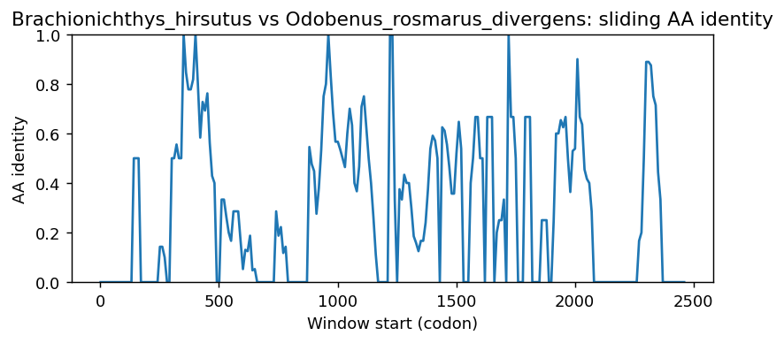
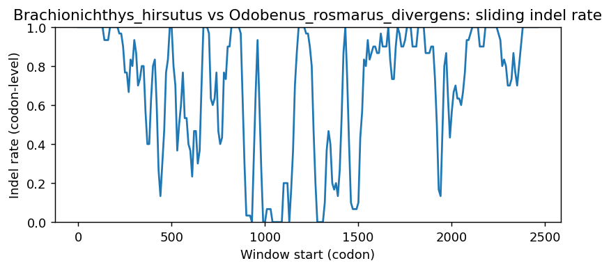
Brachionichthys_hirsutus vs Leptonychotes_weddellii
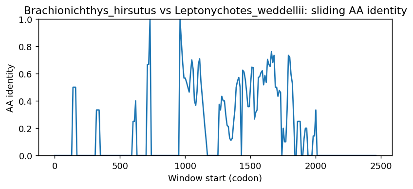
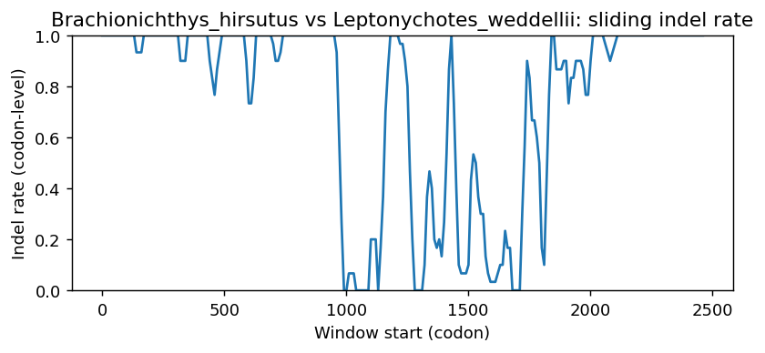
Brachionichthys_hirsutus vs Erinaceus_europaeus
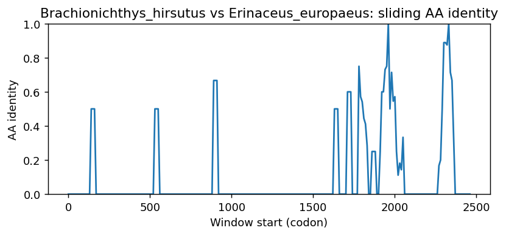
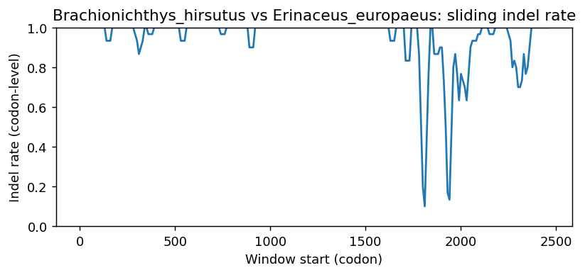
Brachionichthys_hirsutus vs Callorhinus_ursinus
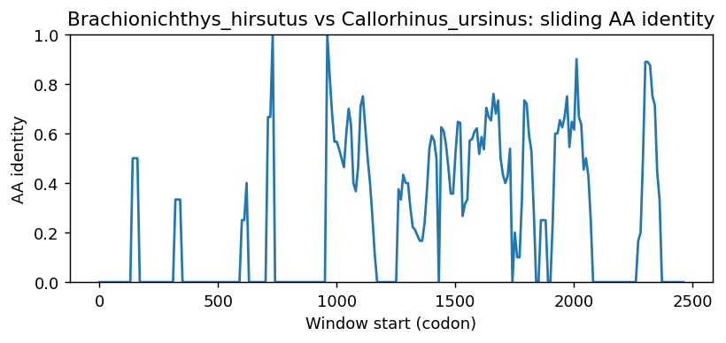
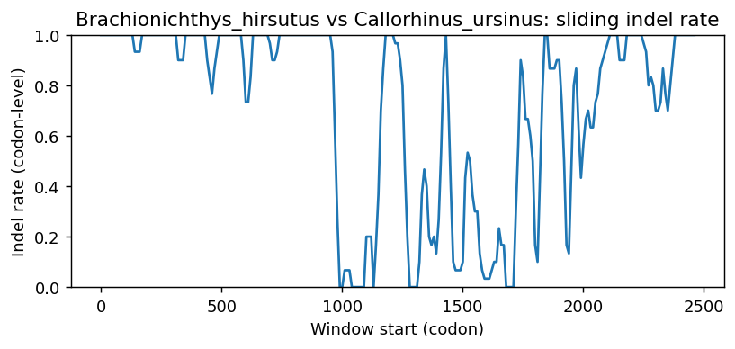
Brachionichthys_hirsutus vs Myotis_brandtii
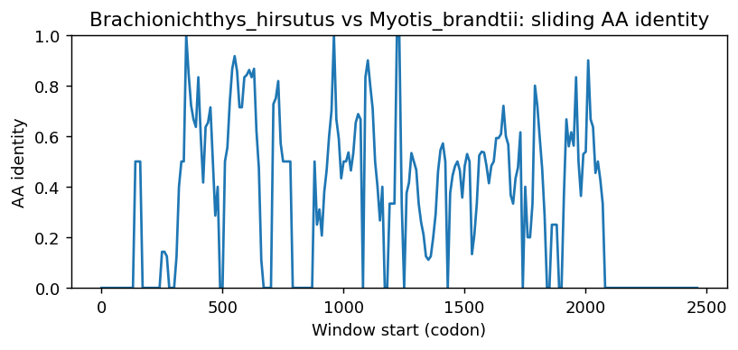
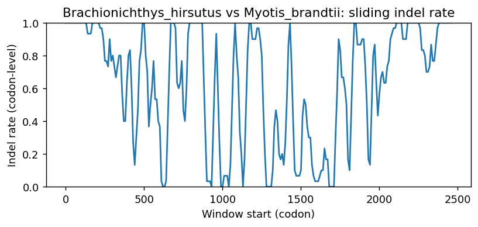
Brachionichthys_hirsutus vs Pipistrellus_kuhlii
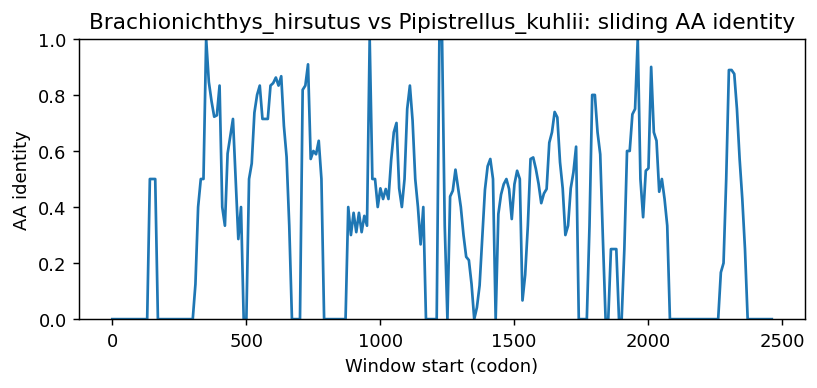
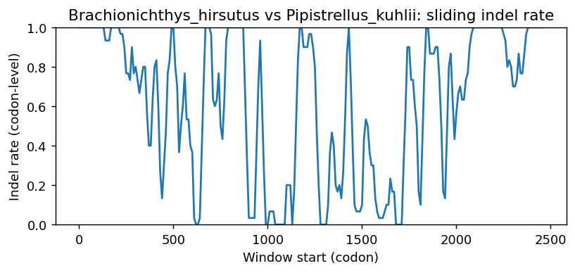
Methods (brief)
- CDS are translated (genetic code 1); proteins aligned by MAFFT when available, otherwise a progressive global aligner (BLOSUM62). Protein MSA is back-translated into a codon MSA.
- Pairwise metrics: AA/NT identities on aligned nongap positions; Ts/Tv; single-hit syn/nonsyn counts; gap events and largest contiguous gap cluster (codons); sliding-window AA identity and codon-level indel rate.
- Per-sequence diagnostics: GC content/skew, CpG density, AA low-complexity fraction via SEG-like entropy windows (win=12, H<2.2), and NT tandem repeats (homopolymers =5; di-nt =4 copies; tri-nt =3 copies).
- Correlations: Pearson/Spearman between AA identity and |GC difference|, mean AA LCR fraction, and mean NT repeat fraction across pairs.
- Risk classifier: combines identity, coverage, longest identical block, low-ID windows, max indel cluster, and up-ranks risk when mean LCR =0.25 or mean repeat =0.10 (soft-masking can remove seeds and reduce sensitivity).
Artifacts: pairwise_metrics.csv, per_sequence_composition.csv, correlations.csv, alignment_protein.faa, alignment_codon.fna.